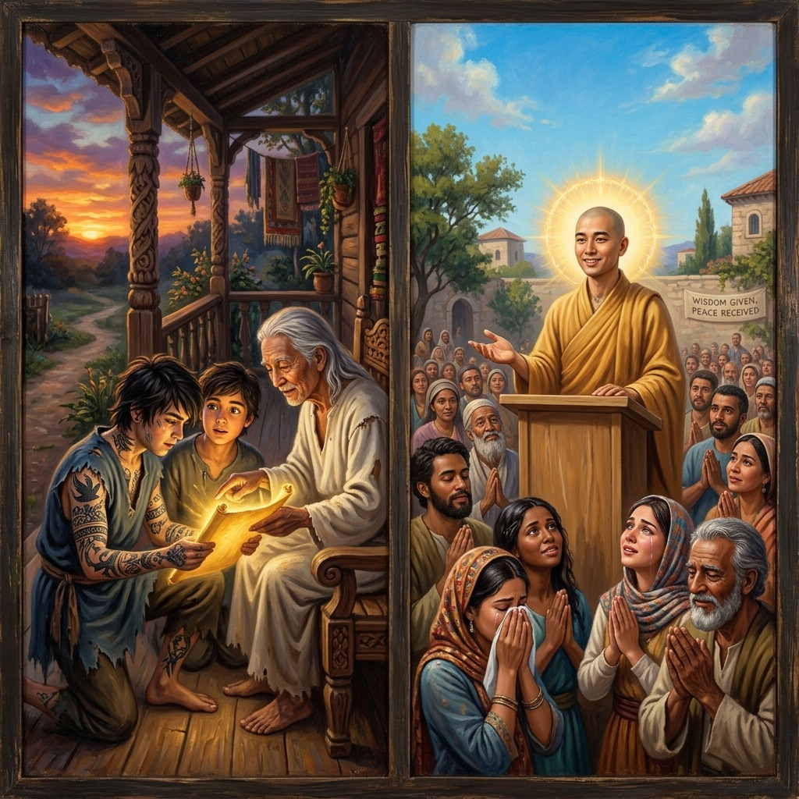
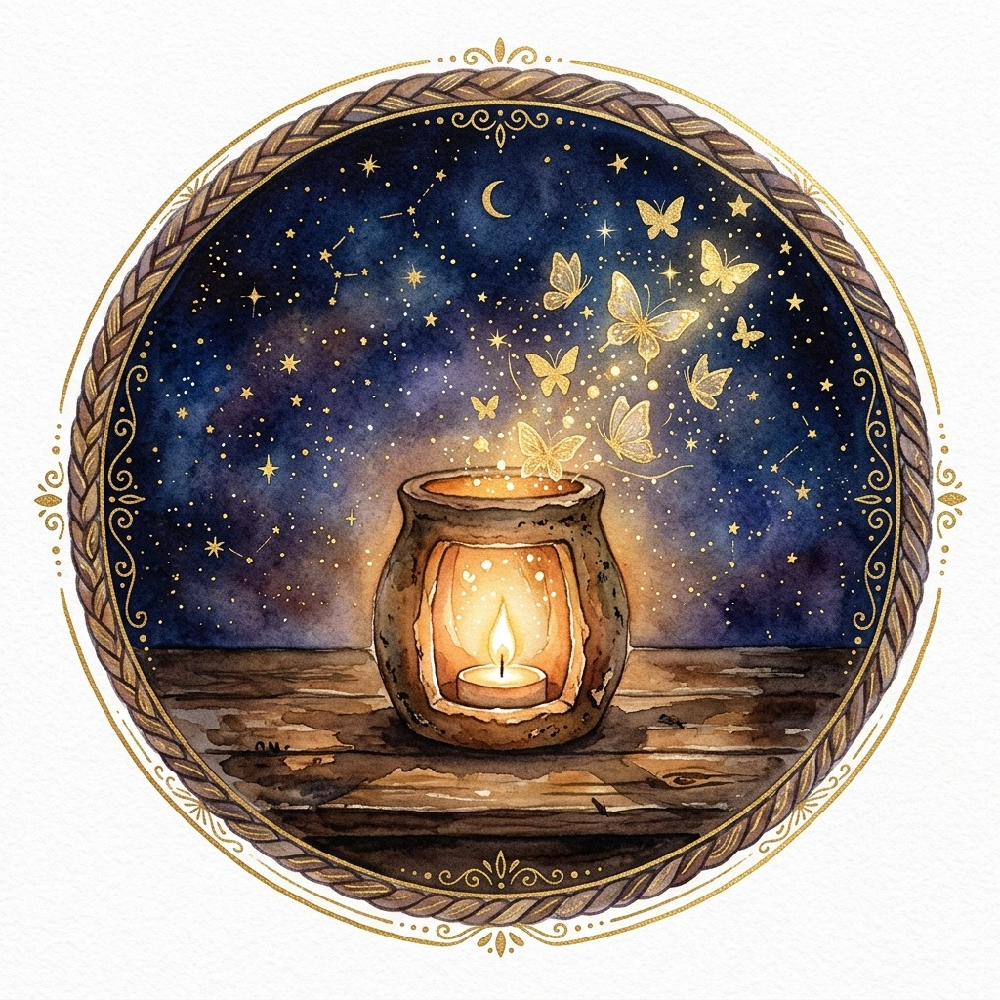
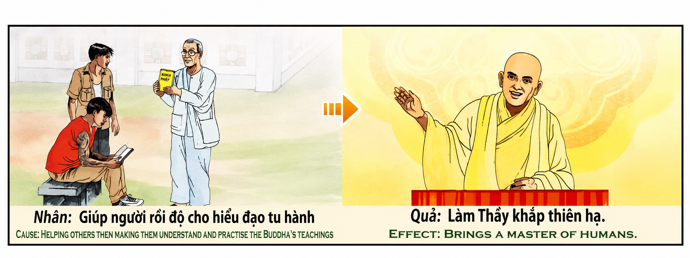

El Sembrador de Luz y la Corona del Maestro The Sower of Light and the Master's Crown Il Seminatore di Luce e la Corona del Maestro 光之播种者与主人的王冠 زارع النور وتاج السيد Сеятель света и корона мастера Der Säer des Lichts und die Krone des Meisters Le Semeur de Lumière et la Couronne du Maître 光の種まき者とマスターの王冠 O Semeador de Luz e a Coroa do Mestre Người Gieo Ánh Sáng Và Vương Miện Của Bậc Thầy
"Ayudar a las almas a cruzar el río de la ignorancia, tender puentes de amor y guiarlas con infinita paciencia hacia la verdad es la siembra más excelsa del cosmos. El universo no corona al sabio por el brillo de su intelecto, sino por la humilde luz que enciende en el corazón de los afligidos. Quien enseña con amor incondicional y se convierte en el faro de los descarriados, renace revestido con la gracia divina de un maestro celestial, venerado por hombres y ángeles." "To help souls cross the river of ignorance, to build bridges of love, and to guide them with infinite patience towards the truth is the most sublime sowing of the cosmos. The universe does not crown the sage for the brilliance of his intellect, but for the humble light he ignites in the heart of the afflicted. He who teaches with unconditional love and becomes the lighthouse of the lost, is reborn clothed in the divine grace of a celestial master, revered by men and angels." "Aiutare le anime ad attraversare il fiume dell'ignoranza, costruendo ponti d'amore e guidandole con infinita pazienza verso la verità è la semina più eccellente nel cosmo. L'universo non incorona l'uomo saggio per lo splendore del suo intelletto, ma per l'umile luce che egli accende nei cuori degli afflitti. Colui che insegna con amore incondizionato e diventa il faro dei fuorviati, rinasce rivestito della grazia divina di maestro celeste, venerato dagli uomini e angeli." “帮助灵魂跨越无知之河，架起爱的桥梁，以无限的耐心引导他们走向真理，是宇宙中最优秀的播种。宇宙不会因为智者的聪明才智而给他们加冕，而是因为他在受苦者的心中点燃了谦卑的光芒。以无条件的爱教导并成为误导者的灯塔的人，重生时会披戴天上导师的神圣恩典，受到尊敬。由人类和天使。” "إن مساعدة النفوس على عبور نهر الجهل، وبناء جسور الحب وإرشادها بصبر لا نهاية له نحو الحقيقة هو أفضل زرع في الكون. إن الكون لا يتوج الرجل الحكيم لتألق عقله، بل للنور المتواضع الذي يضيئه في قلوب المنكوبين. إن الذي يعلم بالحب غير المشروط ويصبح منارة الضالين، يولد من جديد ملبساً النعمة الإلهية للمعلم السماوي، يقدسه الرجال والملائكة." «Помогать душам пересечь реку невежества, строить мосты любви и с бесконечным терпением вести их к истине — это самое превосходное сеяние в космосе. Вселенная венчает мудреца не за блеск его интеллекта, а за смиренный свет, который он зажигает в сердцах страждущих. Тот, кто учит с безусловной любовью и становится светочком для заблудших, возрождается, облаченный в божественную благодать небесного учителя, почитаемого людьми и ангелами». „Seelen zu helfen, den Fluss der Unwissenheit zu überqueren, Brücken der Liebe zu bauen und sie mit unendlicher Geduld zur Wahrheit zu führen, ist die vorzüglichste Saat im Kosmos. Das Universum krönt den weisen Mann nicht für die Brillanz seines Intellekts, sondern für das bescheidene Licht, das er in den Herzen der Leidenden erleuchtet. Wer mit bedingungsloser Liebe lehrt und zum Leuchtfeuer der Irrgeleiteten wird, wird mit der göttlichen Gnade eines himmlischen Lehrers wiedergeboren. von Menschen und Engeln verehrt. "Aider les âmes à traverser le fleuve de l'ignorance, construire des ponts d'amour et les guider avec une patience infinie vers la vérité est la semence la plus excellente du cosmos. L'univers ne couronne pas le sage pour l'éclat de son intellect, mais pour l'humble lumière qu'il éclaire dans le cœur des affligés. Celui qui enseigne avec un amour inconditionnel et devient le phare des égarés, renaît revêtu de la grâce divine d'un enseignant céleste, vénéré. par les hommes et les anges. » 「魂が無知の川を渡るのを助け、愛の橋を架け、無限の忍耐力で真理へと導くことは、宇宙で最も優れた種まきである。宇宙は知性の輝きを理由に賢者に栄冠を与えるのではなく、苦しむ人々の心に灯る謙虚な光を称える。無条件の愛を持って教え、誤った導きの灯となる者は、神の恩寵をまとって生まれ変わる。人間と天使から尊敬される天の教師。」 “Ajudar as almas a atravessar o rio da ignorância, construir pontes de amor e guiá-las com infinita paciência rumo à verdade é a mais excelente semeadura do cosmos. O universo não coroa o sábio pelo brilho de seu intelecto, mas pela luz humilde que ele acende no coração dos aflitos. anjos." "Giúp các linh hồn vượt qua dòng sông vô minh, xây dựng những cây cầu yêu thương và kiên nhẫn dẫn dắt họ hướng về chân lý là sự gieo trồng cao quý nhất của vũ trụ. Vũ trụ không trao vương miện cho bậc hiền triết vì sự rực rỡ của trí tuệ, mà vì ánh sáng khiêm nhường họ thắp lên trong trái tim của những người đau khổ. Kẻ dạy dỗ bằng tình yêu vô điều kiện và trở thành ngọn hải đăng cho những người lầm đường lạc lối, sẽ tái sinh trong ân sủng thiêng liêng của một bậc thầy thiên giới, được loài người và chư thiên kính trọng."
Entre todas las acciones morales y espirituales que un ser humano puede realizar en el tapiz de la existencia, guiar a otros con amor y paciencia hacia la sabiduría es la siembra de mayor trascendencia kármica. La enseñanza no es un acto de soberbia intelectual, sino un sacerdocio de pura compasión. Al regalar el conocimiento de las leyes universales y orientar a quienes caminan en la confusión, el instructor participa de forma proactiva en el plan divino de elevación colectiva, lo que reescribe de inmediato su propia trayectoria espiritual.
La primera dimensión de esta siembra es psicológica: la disolución del orgullo y el cultivo de la humildad. Quien enseña con la intención pura de guiar no busca la gloria de ser llamado maestro, sino el florecimiento del alma del estudiante. Enseñar con amor incondicional y paciencia inquebrantable exige restarle importancia al propio ego para situar el bienestar del prójimo en el centro. Al presenciar el sufrimiento y las dudas de quien busca, el maestro pule su propia mente como un espejo limpio, eliminando las impurezas de la arrogancia intelectual y alcanzando una claridad mental insuperable.
La segunda dimensión es energética y resonante: la amplificación del faro cósmico. Por la ley de correspondencia, la luz que proyectamos para disipar las tinieblas ajenas ilumina simultáneamente nuestro propio porvenir. El instructor espiritual actúa como un faro celestial en medio del mar tormentoso de la ignorancia terrenal. Al proteger y orientar a las almas descarriadas, el universo concede al maestro una protección superior. Su propia alma es revestida con una gracia y nobleza inigualables, asegurando que en sus siguientes etapas evolutivas esté rodeado de paz, salud y una profunda abundancia moral y espiritual.
La tercera dimensión es la consagración kármica del magisterio universal. Quien de forma proactiva ha encendido la antorcha del saber en otros, renace en existencias posteriores con la corona del verdadero sabio: un maestro de la humanidad venerado por todos. Su palabra posee una fuerza magnética de convicción y paz pura que disuelve los conflictos, y su sola presencia actúa como un bálsamo reconfortante para quienes sufren. Es el resultado directo de haber sido la linterna compasiva que guio a las almas rotas hacia el templo eterno de la paz divina.
Among all moral and spiritual actions a human being can perform on the tapestry of existence, guiding others with love and patience toward wisdom is the sowing of greatest karmic significance. Teaching is not an act of intellectual pride, but a priesthood of pure compassion. By gifting the knowledge of universal laws and directing those who walk in confusion, the instructor proactively participates in the divine plan of collective elevation, immediately rewriting their own spiritual trajectory.
The first dimension of this sowing is psychological: the dissolution of pride and the cultivation of humility. He who teaches with the pure intention of guiding does not seek the glory of being called a master, but the blossoming of the student's soul. To teach with unconditional love and unwavering patience requires reducing the importance of one's own ego to place the neighbor's well-being at the center. By witnessing the suffering and doubts of the seeker, the master polishes his own mind like a clean mirror, eliminating the impurities of intellectual arrogance and reaching an insuperable mental clarity.
The second dimension is energetic and resonant: the amplification of the cosmic lighthouse. By the law of correspondence, the light we project to dissipate others' darkness simultaneously illuminates our own future. The spiritual instructor acts as a celestial lighthouse in the middle of the stormy sea of earthly ignorance. By protecting and directing lost souls, the universe grants the master superior protection. His own soul is clothed in unmatched grace and nobility, ensuring that in his next evolutionary stages he is surrounded by peace, health, and deep moral and spiritual abundance.
The third dimension is the karmic consecration of universal mastership. He who has proactively ignited the torch of knowledge in others is reborn in subsequent lives with the crown of the true sage: a master of humanity revered by all. His word possesses a magnetic force of conviction and pure peace that dissolves conflicts, and his mere presence acts as a comforting balm for those who suffer. It is the direct result of having been the compassionate lantern that guided broken souls to the eternal temple of divine peace.
Tra tutte le azioni morali e spirituali che un essere umano può compiere nell'arazzo dell'esistenza, guidare gli altri con amore e pazienza verso la saggezza è la semina di una maggiore trascendenza karmica. Insegnare non è un atto di arroganza intellettuale, ma un sacerdozio di pura compassione. Donando la conoscenza delle leggi universali e guidando coloro che camminano nella confusione, l'istruttore partecipa in modo proattivo al piano divino di elevazione collettiva, riscrivendo immediatamente la propria traiettoria spirituale.
La prima dimensione di questa semina è psicologica: la dissoluzione dell'orgoglio e la coltivazione dell'umiltà. Chi insegna con la pura intenzione di guidare non cerca la gloria di essere chiamato insegnante, ma piuttosto la fioritura dell'anima dello studente. Insegnare con amore incondizionato e pazienza incrollabile richiede di minimizzare il proprio ego per mettere al centro il benessere degli altri. Assistendo alla sofferenza e ai dubbi del ricercatore, il maestro lucida la propria mente come uno specchio pulito, rimuovendo le impurità dell'arroganza intellettuale e ottenendo una chiarezza mentale insuperabile.
La seconda dimensione è energetica e risonante: l'amplificazione del faro cosmico. Secondo la legge della corrispondenza, la luce che proiettiamo per dissipare l’oscurità degli altri illumina contemporaneamente il nostro futuro. L’istruttore spirituale agisce come un faro celeste in mezzo al mare tempestoso dell’ignoranza terrena. Proteggendo e guidando le anime ribelli, l'universo garantisce al maestro una protezione superiore. La tua stessa anima è rivestita di grazia e nobiltà senza pari, assicurando che nei tuoi prossimi stadi evolutivi sarai circondato da pace, salute e profonda abbondanza morale e spirituale.
La terza dimensione è la consacrazione karmica del magistero universale. Colui che ha acceso proattivamente negli altri la fiaccola della conoscenza rinasce nelle esistenze successive con la corona del vero saggio: un maestro di umanità venerato da tutti. La sua parola possiede una forza magnetica di convinzione e di pace pura che dissolve i conflitti, e la sua stessa presenza agisce come un balsamo confortante per chi soffre. È la conseguenza diretta dell'essere stata la lanterna compassionevole che guidava le anime spezzate verso il tempio eterno della pace divina.
在人类在存在的织锦中可以进行的所有道德和精神行为中，以爱和耐心引导他人走向智慧是播种更大的业力超越。教学不是一种知识分子的傲慢行为，而是一种纯粹的同情心。通过传授宇宙法则的知识，引导迷茫的人们，导师主动参与集体提升的神圣计划，立即改写自己的精神轨迹。
这种播种的第一个维度是心理上的：消除骄傲并培养谦卑。纯粹以引导为目的的教学者，不追求被称为老师的荣耀，而是追求学生灵魂的绽放。以无条件的爱和坚定不移的耐心进行教学需要淡化自己的自我，将他人的福祉置于中心位置。通过目睹求道者的痛苦和疑惑，上师将自己的心擦得像一面干净的镜子，去除了理智傲慢的杂质，达到了无上的心明晰。
第二个维度是充满活力和共鸣：宇宙信标的放大。根据对应法则，我们投射出的光芒驱散他人的黑暗，同时也照亮了我们自己的未来。精神导师在尘世无明的波涛汹涌的大海中充当着天堂的灯塔。通过保护和引导任性的灵魂，宇宙给予主人卓越的保护。你自己的灵魂披上了无与伦比的优雅和高贵，确保在你的下一个进化阶段，你被和平、健康以及深刻的道德和精神丰富所包围。
第三个维度是宇宙权威的业力奉献。主动点燃他人知识火炬的人，将在来世重生，戴上真正圣人的桂冠：一位受所有人尊敬的人类导师。他的话语具有令人信服的磁力和消除冲突的纯粹和平，他的存在对那些受苦受难的人来说是一种安慰。这是作为慈悲灯笼引导破碎的灵魂走向神圣和平的永恒殿堂的直接结果。
من بين جميع الأفعال الأخلاقية والروحية التي يمكن للإنسان أن يؤديها في نسيج الوجود، فإن توجيه الآخرين بالحب والصبر نحو الحكمة هو زرع سمو أعظم للكارما. إن التعليم ليس عملاً من أعمال الغطرسة الفكرية، بل هو كهنوت الرحمة الخالصة. من خلال منح المعرفة بالقوانين العالمية وتوجيه أولئك الذين يسيرون في ارتباك، يشارك المعلم بشكل استباقي في الخطة الإلهية للارتقاء الجماعي، ويعيد كتابة مساره الروحي على الفور.
البعد الأول لهذا البذر هو البعد النفسي: ذوبان الكبرياء وزراعة التواضع. من يعلم بنية خالصة للتوجيه لا يسعى إلى مجد لقب المعلم، بل إلى ازدهار روح الطالب. يتطلب التدريس بالحب غير المشروط والصبر الذي لا يتزعزع التقليل من شأن غرور الفرد لوضع رفاهية الآخرين في المركز. ومن خلال مشاهدة معاناة الباحث وشكوكه، يصقل السيد عقله كمرآة نظيفة، ويزيل شوائب الغطرسة الفكرية ويحقق الوضوح العقلي غير المسبوق.
البعد الثاني هو نشيط ورنان: تضخيم المنارة الكونية. وبموجب قانون المراسلة، فإن الضوء الذي نعرضه لتبديد ظلام الآخرين ينير مستقبلنا في الوقت نفسه. يعمل المرشد الروحي كمنارة سماوية في وسط بحر الجهل الأرضي العاصف. من خلال حماية وتوجيه النفوس الضالة، يمنح الكون السيد حماية فائقة. روحك مغطاة بنعمة ونبل لا مثيل لهما، مما يضمن أنك في مراحل تطورك التالية محاطة بالسلام والصحة والوفرة الأخلاقية والروحية العميقة.
البعد الثالث هو التكريس الكرمي للسلطة التعليمية الشاملة. الشخص الذي أشعل شعلة المعرفة في الآخرين بشكل استباقي، يولد من جديد في الوجود اللاحق بتاج الحكيم الحقيقي: معلم الإنسانية الذي يحظى باحترام الجميع. فكلمته تمتلك قوة اقتناع مغناطيسية وسلامًا نقيًا يذيب الصراعات، وحضوره ذاته بمثابة بلسم يريح المتألمين. إنها النتيجة المباشرة لكونك المصباح الرحيم الذي يرشد النفوس المنكسرة نحو الهيكل الأبدي للسلام الإلهي.
Среди всех моральных и духовных действий, которые человек может совершать в гобелене существования, руководство другими с любовью и терпением к мудрости является сеянием большей кармической трансцендентности. Обучение – это не акт интеллектуального высокомерия, а священство чистого сострадания. Даруя знание универсальных законов и направляя идущих в замешательстве, наставник активно участвует в божественном плане коллективного подъема, немедленно переписывая свою собственную духовную траекторию.
Первое измерение этого посева — психологическое: растворение гордыни и взращивание смирения. Тот, кто учит с чистым намерением направлять, ищет не славы звания учителя, а, скорее, расцвета души ученика. Обучение с безусловной любовью и непоколебимым терпением требует преуменьшения собственного эго, чтобы поставить благополучие других в центр. Становясь свидетелем страданий и сомнений искателя, мастер полирует собственный разум, как чистое зеркало, удаляя примеси интеллектуального высокомерия и достигая непревзойденной ясности ума.
Второе измерение энергичное и резонансное: усиление космического маяка. По закону соответствия свет, который мы излучаем, чтобы рассеять тьму других, одновременно освещает и наше собственное будущее. Духовный наставник выступает небесным маяком среди бурного моря земного невежества. Защищая и направляя заблудшие души, Вселенная предоставляет хозяину превосходную защиту. Ваша собственная душа облачена в непревзойденную грацию и благородство, гарантируя, что на следующих этапах эволюции вы будете окружены миром, здоровьем и глубоким нравственным и духовным изобилием.
Третье измерение — это кармическое освящение вселенского магистериума. Тот, кто активно зажег факел знаний в других, возрождается в последующих существованиях с короной истинного мудреца: почитаемого всеми учителя человечества. Его слово обладает магнетической силой убеждения и чистого мира, который растворяет конфликты, а само его присутствие действует как утешительный бальзам для тех, кто страдает. Это прямой результат того, что он был сострадательным фонарем, который вел сломленные души к вечному храму божественного мира.
Unter all den moralischen und spirituellen Handlungen, die ein Mensch im Geflecht der Existenz ausführen kann, ist die Führung anderer mit Liebe und Geduld zur Weisheit die Aussaat größerer karmischer Transzendenz. Lehren ist kein Akt intellektueller Arroganz, sondern ein Priestertum puren Mitgefühls. Durch die Vermittlung des Wissens über universelle Gesetze und die Führung derjenigen, die in Verwirrung wandeln, beteiligt sich der Ausbilder proaktiv am göttlichen Plan der kollektiven Erhebung und schreibt sofort seinen eigenen spirituellen Weg neu.
Die erste Dimension dieser Aussaat ist psychologischer Natur: die Auflösung des Stolzes und die Kultivierung der Demut. Wer mit der reinen Absicht der Führung lehrt, strebt nicht nach dem Ruhm, Lehrer genannt zu werden, sondern nach dem Aufblühen der Seele des Schülers. Beim Unterrichten mit bedingungsloser Liebe und unerschütterlicher Geduld muss das eigene Ego heruntergespielt werden, um das Wohlergehen anderer in den Mittelpunkt zu stellen. Indem der Meister das Leiden und die Zweifel des Suchenden miterlebt, poliert er seinen eigenen Geist wie einen sauberen Spiegel, beseitigt die Unreinheiten intellektueller Arroganz und erreicht unübertroffene geistige Klarheit.
Die zweite Dimension ist energetisch und resonant: die Verstärkung des kosmischen Leuchtfeuers. Durch das Gesetz der Korrespondenz erhellt das Licht, das wir ausstrahlen, um die Dunkelheit anderer zu vertreiben, gleichzeitig unsere eigene Zukunft. Der spirituelle Lehrer fungiert als himmlisches Leuchtfeuer inmitten des stürmischen Meeres der irdischen Unwissenheit. Durch den Schutz und die Führung abtrünniger Seelen gewährt das Universum dem Meister überlegenen Schutz. Ihre eigene Seele ist mit unvergleichlicher Anmut und Vornehmheit bekleidet und stellt sicher, dass Sie in Ihren nächsten Evolutionsstufen von Frieden, Gesundheit und tiefer moralischer und spiritueller Fülle umgeben sind.
Die dritte Dimension ist die karmische Weihe des universalen Lehramtes. Wer proaktiv die Fackel des Wissens in anderen entzündet hat, wird in späteren Existenzen mit der Krone des wahren Weisen wiedergeboren: eines Lehrers der Menschheit, der von allen verehrt wird. Sein Wort besitzt eine magnetische Kraft der Überzeugung und des reinen Friedens, die Konflikte auflöst, und seine bloße Gegenwart wirkt wie ein tröstender Balsam für diejenigen, die leiden. Es ist das direkte Ergebnis davon, dass er die mitfühlende Laterne war, die gebrochene Seelen zum ewigen Tempel des göttlichen Friedens führte.
Parmi toutes les actions morales et spirituelles qu'un être humain peut accomplir dans la tapisserie de l'existence, guider les autres avec amour et patience vers la sagesse est le semis d'une plus grande transcendance karmique. Enseigner n’est pas un acte d’arrogance intellectuelle, mais un sacerdoce de pure compassion. En faisant don de la connaissance des lois universelles et en guidant ceux qui marchent dans la confusion, l'instructeur participe de manière proactive au plan divin d'élévation collective, réécrivant immédiatement sa propre trajectoire spirituelle.
La première dimension de cet semis est psychologique : la dissolution de l’orgueil et la culture de l’humilité. Celui qui enseigne avec la pure intention de guider ne recherche pas la gloire d’être appelé enseignant, mais plutôt l’épanouissement de l’âme de l’élève. Enseigner avec un amour inconditionnel et une patience inébranlable nécessite de minimiser son propre ego pour placer le bien-être des autres au centre. En étant témoin de la souffrance et des doutes du chercheur, le maître polit son propre esprit comme un miroir propre, éliminant les impuretés de l'arrogance intellectuelle et atteignant une clarté mentale inégalée.
La deuxième dimension est énergétique et résonante : l'amplification du phare cosmique. Par la loi de la correspondance, la lumière que nous projetons pour dissiper les ténèbres des autres éclaire simultanément notre propre avenir. L'instructeur spirituel agit comme un phare céleste au milieu de la mer orageuse de l'ignorance terrestre. En protégeant et en guidant les âmes rebelles, l’univers accorde au maître une protection supérieure. Votre propre âme est revêtue d’une grâce et d’une noblesse inégalées, garantissant que lors de vos prochaines étapes d’évolution, vous serez entouré de paix, de santé et d’une profonde abondance morale et spirituelle.
La troisième dimension est la consécration karmique du magistère universel. Celui qui a allumé de manière proactive le flambeau de la connaissance chez les autres renaît dans les existences ultérieures avec la couronne du vrai sage : un professeur d’humanité vénéré de tous. Sa parole possède une force magnétique de conviction et de paix pure qui dissout les conflits, et sa présence même agit comme un baume réconfortant pour ceux qui souffrent. C’est le résultat direct du fait d’avoir été la lanterne compatissante qui a guidé les âmes brisées vers le temple éternel de la paix divine.
人間が存在というタペストリーの中で行うことのできる道徳的かつ精神的な行動の中でも、愛と忍耐をもって他者を知恵へと導くことは、より大きなカルマ的超越性の種を蒔くことです。教えることは知的な傲慢な行為ではなく、純粋な慈悲の神権です。普遍的な法則の知識を与え、混乱の中を歩む人々を導くことによって、インストラクターは集団的高揚という神聖な計画に積極的に参加し、自分自身の精神的な軌道を即座に書き換えます。
この種まきの最初の側面は心理的なものであり、プライドを解消し、謙虚さを培うことです。純粋に指導するという意図で教える人は、教師と呼ばれる栄光を求めるのではなく、生徒の魂の開花を求めます。無条件の愛と揺るぎない忍耐をもって教えるには、自分自身のエゴを軽視し、他人の幸福を中心に置くことが必要です。探求者の苦しみと疑いを目の当たりにすることで、マスターは自分の心をきれいな鏡のように磨き、知的傲慢の不純物を取り除き、比類のない精神の明晰さを達成します。
2 番目の次元はエネルギーと共鳴、つまり宇宙のビーコンの増幅です。対応の法則により、他人の闇を払拭するために私たちが投射する光は、同時に私たち自身の未来も照らします。スピリチュアルなインストラクターは、地上の無知の嵐の海の真っただ中で天の灯台として機能します。気まぐれな魂を保護し導くことによって、宇宙はマスターに優れた保護を与えます。あなた自身の魂は、比類のない優雅さと高貴さで覆われており、次の進化の段階では、平和、健康、そして道徳的および精神的な深い豊かさに囲まれることを保証します。
第三の次元は万国教導職のカルマ的聖別です。積極的に他人の中に知識の灯火を灯した人は、真の賢者の冠をかぶって来世に生まれ変わります。つまり、すべての人から尊敬される人類の教師です。彼の言葉には、争いを解消する信念と純粋な平和の磁力があり、彼の存在そのものが、苦しむ人々にとって慰めとなる香油の役割を果たします。それは、打ち砕かれた魂を神の平和の永遠の神殿へと導く慈悲深いランタンであったことの直接の結果です。
Entre todas as ações morais e espirituais que um ser humano pode realizar na tapeçaria da existência, guiar os outros com amor e paciência em direção à sabedoria é a sementeira de uma maior transcendência cármica. Ensinar não é um ato de arrogância intelectual, mas um sacerdócio de pura compaixão. Ao dotar o conhecimento das leis universais e orientar aqueles que caminham confusos, o instrutor participa proativamente do plano divino de elevação coletiva, reescrevendo imediatamente sua própria trajetória espiritual.
A primeira dimensão desta semeadura é psicológica: a dissolução do orgulho e o cultivo da humildade. Quem ensina com a pura intenção de orientar não busca a glória de ser chamado de professor, mas sim o florescimento da alma do aluno. Ensinar com amor incondicional e paciência inabalável exige minimizar o próprio ego para colocar o bem-estar dos outros no centro. Ao testemunhar o sofrimento e as dúvidas de quem busca, o mestre lapida sua própria mente como um espelho limpo, removendo as impurezas da arrogância intelectual e alcançando uma clareza mental insuperável.
A segunda dimensão é energética e ressonante: a amplificação do farol cósmico. Pela lei da correspondência, a luz que projetamos para dissipar a escuridão dos outros ilumina simultaneamente o nosso próprio futuro. O instrutor espiritual atua como um farol celestial em meio ao mar tempestuoso da ignorância terrena. Ao proteger e guiar as almas rebeldes, o universo concede ao mestre proteção superior. Sua própria alma está revestida de graça e nobreza incomparáveis, garantindo que em seus próximos estágios evolutivos você esteja cercado de paz, saúde e profunda abundância moral e espiritual.
A terceira dimensão é a consagração cármica do magistério universal. Aquele que acendeu proativamente a tocha do conhecimento nos outros renasce nas existências subsequentes com a coroa do verdadeiro sábio: um professor da humanidade reverenciado por todos. A sua palavra possui uma força magnética de convicção e de pura paz que dissolve conflitos, e a sua própria presença funciona como um bálsamo reconfortante para quem sofre. É o resultado direto de ter sido a lanterna compassiva que guiou as almas quebrantadas ao templo eterno da paz divina.
Trong số tất cả các hành động đạo đức và tâm linh mà một con người có thể thực hiện trên tấm thảm của sự tồn tại, việc dẫn dắt người khác bằng tình yêu thương và sự kiên nhẫn hướng tới trí tuệ là sự gieo trồng có ý nghĩa nghiệp quả lớn nhất. Dạy dỗ không phải là một hành động kiêu ngạo về mặt trí tuệ, mà là một thiên chức của lòng từ bi thuần khiết. Bằng cách ban tặng kiến thức về các quy luật vũ trụ và dẫn dắt những người đang đi trong sự hỗn loạn, người hướng dẫn chủ động tham gia vào kế hoạch thiêng liêng nâng cao nhận thức chung, viết lại ngay lập tức quỹ đạo tâm linh của chính họ.
Chiều kích thứ nhất của sự gieo trồng này là tâm lý: sự tiêu tan của niềm tự hào và sự nuôi dưỡng lòng khiêm tốn. Người dạy với mục đích hướng dẫn thuần khiết không tìm kiếm vinh quang khi được gọi là bậc thầy, mà là sự nở rộ của linh hồn học trò. Dạy dỗ bằng tình yêu vô điều kiện và sự kiên nhẫn kiên định đòi hỏi phải giảm bớt tầm quan trọng của cái tôi cá nhân để đặt hạnh phúc của tha nhân vào trung tâm. Bằng cách chứng kiến nỗi đau khổ và những nghi ngờ của người tìm kiếm, bậc thầy đánh bóng tâm trí mình như một tấm gương sạch, loại bỏ những tạp chất kiêu ngạo trí thức và đạt đến một sự sáng suốt tâm trí vượt trội.
Chiều kích thứ hai là năng lượng và sự cộng hưởng: sự khuếch đại của ngọn hải đăng vũ trụ. Theo luật tương ứng, ánh sáng chúng ta chiếu ra để xua tan bóng tối của người khác đồng thời chiếu sáng tương lai của chính chúng ta. Người hướng dẫn tâm linh hoạt động như một ngọn hải đăng thiên giới ở giữa biển giông bão của sự vô minh thế gian. Bằng cách bảo vệ và dẫn dắt các linh hồn lầm lạc, vũ trụ ban tặng cho bậc thầy sự bảo vệ cao hơn. Linh hồn của chính người được khoác lên mình ân sủng và sự cao quý vô song, đảm bảo rằng trong các giai đoạn tiến hóa tiếp theo, người được bao quanh bởi hòa bình, sức khỏe và sự phong phú sâu sắc về đạo đức và tâm linh.
Chiều kích thứ ba là sự hiến dâng nghiệp quả của bậc thầy vũ trụ. Người chủ động thắp sáng ngọn đuốc tri thức cho người khác sẽ được tái sinh trong những kiếp sống tiếp theo với vương miện của một nhà hiền triết thực sự: một bậc thầy của nhân loại được mọi người kính trọng. Lời nói của người có một lực lượng từ tính thuyết phục và hòa bình thuần khiết giúp giải quyết các xung đột, và sự hiện diện của người hoạt động như một loại thuốc mỡ an ủi cho những người đau khổ. Đó là kết quả trực tiếp của việc đã từng là chiếc đèn lồng từ bi dẫn dắt những linh hồn tan vỡ đến đền thờ vĩnh cửu của hòa bình thiêng liêng.
La Linterna de Arcilla y la Cúpula de Estrellas
The Clay Lantern and the Canopy of Stars
La Lanterna d'Argilla e la Cupola delle Stelle
泥灯笼和星穹
فانوس الطين وقبة النجمة
Глиняный фонарь и Звездный купол
Die Tonlaterne und der Sternendom
La lanterne d'argile et le dôme étoilé
土灯籠とスタードーム
A Lanterna de Barro e o Star Dome
Đèn Đất Sét Và Vòm Trời Đầy Sao
En un reino lejano, azotado por el viento gélido de la codicia y el desprecio, vivía Silas, un anciano ermitaño de túnica blanca y mirada mansa que habitaba una humilde choza a la entrada del Bosque de los Susurros. Silas no poseía riquezas ni daba sermones en las plazas, pero su vida entera era un manantial de servicio: remendaba las alas de pájaros heridos, compartía sus escasas raíces con los mendigos y, al caer la tarde, enseñaba a leer con ternura a los niños huérfanos del llano bajo la luz de una modesta linterna de arcilla. Silas enseñaba que la verdadera sabiduría no consistía en ganar debates teológicos, sino en amar con paciencia inquebrantable.
Un día, Kaelen, un joven ladrón cubierto de tatuajes ásperos y cicatrices de peleas callejeras, entró en la choza con la espada en la mano, lleno de ira, odio y amargura por el rechazo constante de los suburbios de la gran ciudad. Kaelen exigió a gritos que le entregara sus riquezas, tirando al suelo las escrituras sagradas. En lugar de asustarse o clamar por justicia, Silas lo miró con compasión infinita en sus ojos claros, levantó con reverencia las escrituras de la arcilla y le ofreció su único plato de sopa caliente. Viendo que las manos del joven sangraban por el frío y las espinas, Silas tomó aceites curativos y lavó con suavidad sus heridas, murmurando: «La oscuridad, hijo mío, no se combate con espadas ni con ira, sino encendiendo una pequeña luz en el santuario del corazón».
Kaelen, desarmado ante un amor incondicional que nunca antes había conocido, rompió a llorar sobre las manos del anciano. Decidió quedarse en la choza y durante años Silas se convirtió en su maestro, enseñándole no solo a cultivar la tierra y a tallar la madera, sino a descifrar las leyes invisibles del karma y la paz. Cada vez que Kaelen explotaba en rabia o desconfianza por los fantasmas de su pasado, Silas respondía con el silencio de una paciencia divina, abrazando su agitación como una madre abraza a su hijo asustado. Poco a poco, el corazón de Kaelen se ablandó y su mente alcanzó una calma pura, transformando su antigua violencia en una activa y compasiva necesidad de guiar a otros.
Con el tiempo, Kaelen regresó a la gran ciudad, no para robar, sino para fundar refugios y escuelas de paz donde acogía y enseñaba con la misma ternura de Silas a cientos de jóvenes de la calle que vagaban en el desamparo. Las enseñanzas de Kaelen eran tan bellas, sencillas y cargadas de amor que su influencia se extendió como un bálsamo sanador por todo el reino, convirtiéndose en un maestro espiritual venerado por reyes y campesinos, mientras Silas continuaba barriendo silenciosamente su choza en el bosque, feliz de ver la luz multiplicada.
Muchos años después, al sentir que su aliento vital se apagaba, Silas mandó llamar a su discípulo. Kaelen, ahora un sabio de cabellos plateados rodeado de miles de fieles, dejó a un lado sus vestiduras de seda y corrió al bosque, arrodillándose ante la humilde cama de Silas. Sosteniendo la cabeza cansada de su anciano maestro en su regazo, Kaelen lloró lágrimas de profunda gratitud y devoción que lavaron las arrugas del rostro de Silas. «Maestro... vuestra siembra ha transformado el reino. Miles encuentran refugio en vuestra palabra, pero yo solo soy un servidor que repite vuestra luz. ¿Cómo podré guiar a las almas sin vuestra presencia?», suplicó Kaelen. Silas, con una sonrisa angelical, levantó una mano temblorosa y tocó el pecho de su discípulo, susurrando: «Kaelen... la corona de un maestro no reside en el aplauso de las multitudes ni en los tronos de oro. Mi verdadera corona es ver que la humilde linterna de arcilla que encendí en tu alma rota es ahora una cúpula de estrellas que ilumina el porvenir. Continúa sembrando luz en el desierto, hijo mío, porque no hay mayor magisterio que amar con humildad al que sufre». Con esas palabras de redención, Silas cerró los ojos en absoluta paz cósmica, y Kaelen comprendió que el verdadero magisterio de la tierra es un acto eterno de amor humilde.
In a distant kingdom, swept by the freezing wind of greed and contempt, lived Silas, a gentle white-robed old hermit with a meek gaze who dwelt in a humble cottage at the entrance of the Whispering Woods. Silas owned no wealth nor did he preach in public squares, but his entire life was a wellspring of service: he mended the wings of injured birds, shared his meager roots with beggars, and at dusk, tenderly taught the orphaned children of the plain to read under the light of a modest clay lantern. Silas taught that true wisdom did not consist in winning theological debates, but in loving with unwavering patience.
One day, Kaelen, a young thief covered in rough tattoos and scars from street fights, entered the cottage sword in hand, full of anger, hatred, and bitterness from the constant rejection in the slums of the great city. Kaelen loudly demanded that Silas hand over his wealth, throwing the sacred scriptures to the ground. Instead of showing fear or crying for justice, Silas looked at him with infinite compassion in his clear eyes, reverently lifted the scriptures from the dirt, and offered him his only bowl of hot soup. Seeing that the young man's hands were bleeding from the cold and thorns, Silas took healing oils and gently washed his wounds, murmuring: 'Darkness, my son, is not fought with swords or anger, but by igniting a small light in the sanctuary of the heart.'
Kaelen, disarmed before an unconditional love he had never known before, broke down in tears over the old man's hands. He decided to stay in the cottage, and for years Silas became his master, teaching him not only to till the soil and carve wood, but to decipher the invisible laws of karma and peace. Every time Kaelen exploded in rage or distrust due to the ghosts of his past, Silas responded with the silence of divine patience, embracing his turmoil as a mother embraces her frightened child. Gradually, Kaelen's heart softened and his mind achieved a pure calm, transforming his old violence into an active and compassionate need to guide others.
In time, Kaelen returned to the great city, not to steal, but to establish shelters and schools of peace where he welcomed and taught hundreds of street youth who wandered in helplessness with the same tenderness Silas had shown him. Kaelen's teachings were so beautiful, simple, and charged with love that his influence spread like a healing balm throughout the kingdom, making him a spiritual master revered by kings and peasants alike, while Silas continued to silently sweep his cottage in the forest, happy to see the light multiplied.
Many years later, feeling his life breath fading, Silas sent for his disciple. Kaelen, now a silver-haired sage surrounded by thousands of faithful followers, set aside his silk robes and ran to the forest, kneeling before Silas's humble bed. Sostaining the tired head of his old master in his lap, Kaelen wept tears of deep gratitude and devotion that washed the wrinkles of Silas's face. 'Master... your sowing has transformed the kingdom. Thousands find refuge in your word, but I am only a servant who repeats your light. How will I guide souls without your presence?' Kaelen pleaded. Silas, with an angelic smile, raised a trembling hand and touched his disciple's chest, whispering: 'Kaelen... the crown of a master does not reside in the applause of crowds or gold thrones. My true crown is to see that the humble clay lantern I lit in your broken soul is now a canopy of stars illuminating the future. Continue to sow light in the desert, my son, because there is no greater mastership than loving the one who suffers with humility.' With those words of redemption, Silas closed his eyes in absolute cosmic peace, and Kaelen understood that the true mastership of the earth is an eternal act of humble love.
In un regno lontano, sbattuto dal vento gelido dell'avidità e del disprezzo, viveva Silas, un vecchio eremita dalla veste bianca e dallo sguardo mite che viveva in un'umile capanna all'ingresso della Foresta dei Sussurri. Sila non possedeva ricchezze né teneva sermoni nelle piazze, ma tutta la sua vita fu fonte di servizio: rammendava le ali agli uccelli feriti, condivideva le sue poche radici con i mendicanti e, all'imbrunire, insegnava teneramente ai bambini orfani della pianura a leggere alla luce di una modesta lanterna di argilla. Sila insegnava che la vera saggezza non consisteva nel vincere i dibattiti teologici, ma nell'amare con incrollabile pazienza.
Un giorno, Kaelen, una giovane ladra ricoperta di tatuaggi e cicatrici dovute a risse di strada, entrò nella baracca con la spada in mano, piena di rabbia, odio e amarezza per il costante rifiuto dei sobborghi delle grandi città. Kaelen gli chiese a gran voce di consegnare le sue ricchezze, gettando a terra le sacre scritture. Invece di spaventarsi o invocare giustizia, Silas lo guardò con infinita compassione nei suoi occhi limpidi, sollevò con reverenza le scritte dall'argilla e gli offrì la sua unica ciotola di zuppa calda. Vedendo che le mani del giovane sanguinavano per il freddo e per le spine, Sila prese degli oli curativi e gli lavò delicatamente le ferite, mormorando: "Le tenebre, figlio mio, non si combattono con le spade o con l'ira, ma accendendo una piccola luce nel santuario del cuore".
Kaelen, disarmata da un amore incondizionato che non aveva mai conosciuto prima, scoppiò in lacrime tra le mani del vecchio. Decise di restare nella capanna e per anni Silas divenne il suo maestro, insegnandogli non solo a coltivare la terra e intagliare il legno, ma a decifrare le leggi invisibili del karma e della pace. Ogni volta che Kaelen esplodeva di rabbia o sfiducia nei confronti dei fantasmi del suo passato, Silas rispondeva con il silenzio della pazienza divina, abbracciando la sua agitazione come una madre abbraccia il suo bambino spaventato. A poco a poco, il cuore di Kaelen si addolcì e la sua mente raggiunse la calma pura, trasformando la sua precedente violenza in un bisogno attivo e compassionevole di guidare gli altri.
Col tempo, Kaelen ritornò nella grande città, non per rubare, ma per fondare rifugi e scuole di pace dove accolse e insegnò con la stessa tenerezza di Silas centinaia di giovani di strada che vagavano impotenti. Gli insegnamenti di Kaelen erano così belli, semplici e pieni d'amore che la sua influenza si diffuse come un balsamo curativo in tutto il regno, diventando un maestro spirituale venerato da re e contadini, mentre Silas continuava a spazzare silenziosamente la sua capanna nella foresta, felice di vedere la luce moltiplicata.
Molti anni dopo, sentendo che il suo soffio vitale si stava spegnendo, Sila mandò a chiamare il suo discepolo. Kaelen, ora un saggio dai capelli d'argento circondato da migliaia di adoratori, gettò da parte le sue vesti di seta e corse nella foresta, inginocchiandosi davanti all'umile letto di Silas. Tenendo la testa stanca del suo vecchio maestro in grembo, Kaelen pianse lacrime di profonda gratitudine e devozione che lavarono le rughe dal viso di Silas. «Maestro... la tua semina ha trasformato il regno. Migliaia trovano rifugio nella tua parola, ma io sono solo un servitore che ripete la tua luce. Come potrò guidare le anime senza la tua presenza?” implorò Kaelen. Silas, con un sorriso angelico, alzò una mano tremante e toccò il petto del suo discepolo, sussurrando: "Kaelen... la corona di un maestro non giace negli applausi della folla o su troni dorati. La mia vera corona è vedere che l'umile lanterna di argilla che ho acceso nella tua anima spezzata è ora una cupola di stelle che illumina il futuro. Continua a seminare luce nel deserto, figlio mio, perché non c'è insegnamento più grande che amare umilmente chi soffre. Con quelle parole di redenzione, Silas chiuse gli occhi nell'assoluta pace cosmica, e Kaelen capì che il vero insegnamento della terra è un atto eterno di umile amore.
在一个遥远的王国里，饱受贪婪和蔑视的冰风袭击，住着西拉斯，他是一位身着白袍、眼神温顺的老隐士，住在低语森林入口处的一间简陋小屋里。塞拉斯没有财富，也没有在广场上布道，但他的一生都是服务的源泉：他修补受伤鸟的翅膀，与乞丐分享他仅有的根，黄昏时分，他温柔地教平原上的孤儿在一盏朴素的粘土灯下读书。塞拉斯教导说，真正的智慧不是赢得神学辩论，而是以坚定不移的耐心去爱。
有一天，凯伦，一个满身粗糙纹身和巷战伤痕的年轻小偷，手持剑走进棚屋，对大城市郊区的不断排斥充满了愤怒、仇恨和苦涩。凯伦大声要求他交出自己的财富，并将圣书扔在地上。塞拉斯没有惊慌失措，也没有呼喊正义，而是清澈的眼眸中充满了无限的慈悲，恭敬地从粘土上拿起了文字，将自己唯一的一碗热汤递给了他。看到年轻人的双手因寒冷和荆棘而流血，塞拉斯拿起治疗油，轻轻地清洗他的伤口，低声说道：“我的孩子，黑暗不是用剑或愤怒来对抗的，而是要在心灵的圣所里点燃一盏小灯。”
凯伦被从未有过的无条件的爱所武装，在老人的手中放声大哭。他决定留在小屋里，多年来塞拉斯成为了他的老师，不仅教他耕种土地和雕刻木材，还教他破译业力与和平的无形法则。每当凯伦对过去的阴影爆发出愤怒或不信任时，塞拉斯都会以神圣耐心的沉默来回应，拥抱他的激动，就像母亲拥抱她受惊的孩子一样。渐渐地，凯伦的心软化了，他的思想达到了纯粹的平静，将他以前的暴力转变为一种积极的、富有同情心的指导他人的需要。
随着时间的推移，凯伦回到大城市，不是为了偷窃，而是为了建立庇护所和和平学校，在那里他像塞拉斯一样温柔地欢迎和教导数百名无助流浪的街头青年。凯伦的教义是如此美丽、简单且充满爱，他的影响力像治愈香膏一样传播到整个王国，成为国王和农民尊敬的精神导师，而塞拉斯则继续默默地打扫他在森林中的小屋，高兴地看到光明倍增。
许多年后，塞拉斯感觉自己的生命即将耗尽，他派人去叫来他的弟子。凯伦现在已经是一名银发圣人，周围有成千上万的信徒，他扔掉丝绸长袍，跑进森林，跪在塞拉斯简陋的床前。凯伦将老主人疲惫的头枕在膝上，流下了深深的感激和奉献的泪水，洗掉了塞拉斯脸上的皱纹。 《主人……你的播种改变了这个王国。成千上万的人在你的话语中寻求庇护，但我只是一个重复你光芒的仆人。没有你的存在，我如何能够引导灵魂呢？”凯伦恳求道。塞拉斯带着天使般的微笑，举起颤抖的手，抚摸着弟子的胸口，低声说道：“凯伦……大师的王冠不在于人群的掌声，也不在于金色的王座。我真正的皇冠是看到我在你破碎的灵魂中点燃的简陋的粘土灯笼现在变成了照亮未来的星星圆顶。我的孩子，继续在沙漠中播种光明，因为没有什么比谦卑地爱那些受苦的人更伟大的教导了。说完这句救赎的话，塞拉斯在绝对的宇宙和平中闭上了眼睛，凯伦明白了地球的真正教义是一种永恒的谦卑之爱的行为。
في مملكة بعيدة، تضربها رياح الجشع والازدراء الجليدية، عاش سيلاس، وهو ناسك عجوز يرتدي ثوبًا أبيض ونظرة وديعة، يعيش في كوخ متواضع عند مدخل غابة الهمسات. لم يكن سيلاس يملك ثروة، ولم يكن يلقي خطبًا في الساحات، لكن حياته كلها كانت ينبوع خدمة: أصلح أجنحة الطيور الجريحة، وتقاسم جذوره القليلة مع المتسولين، وعند الغسق، كان يعلم بحنان أطفال السهل الأيتام القراءة تحت ضوء فانوس طيني متواضع. علم سيلاس أن الحكمة الحقيقية ليست الفوز في المناقشات اللاهوتية، بل المحبة بصبر لا يتزعزع.
في أحد الأيام، دخل كايلين، وهو لص شاب مغطى بالوشم الخام والندوب الناجمة عن قتال الشوارع، الكوخ بالسيف في يده، وهو مليئ بالغضب والكراهية والمرارة بسبب الرفض المستمر من ضواحي المدينة الكبيرة. طالبه كايلين بصوت عالٍ بتسليم ثروته وإلقاء الكتابات المقدسة على الأرض. وبدلاً من الخوف أو الصراخ من أجل العدالة، نظر إليه سيلاس بشفقة لا نهاية لها في عينيه الواضحتين، ورفع الكتابات من الطين بكل احترام، وقدم له وعاء الحساء الساخن الوحيد. ورأى سيلاس أن يدي الشاب كانتا تنزفان من البرد والشوك، فأخذ زيوتًا شافية وغسل جراحه بلطف، وتمتم: "الظلام يا بني، لا يُحارب بالسيوف أو الغضب، بل بإشعال نور صغير في حرم القلب".
انفجر كايلين، الذي جرده حب غير مشروط لم يعرفه من قبل، بالبكاء بين يدي الرجل العجوز. قرر البقاء في الكوخ وأصبح سيلاس معلمه لسنوات، حيث علمه ليس فقط زراعة الأرض ونحت الخشب، بل أيضًا فك رموز القوانين غير المرئية للكارما والسلام. كلما انفجر كايلين غضبًا أو عدم ثقة بأشباح ماضيه، استجاب سيلاس بصمت الصبر الإلهي، محتضنًا هياجه كما تحتضن الأم طفلها الخائف. شيئًا فشيئًا، رق قلب كايلين ووصل عقله إلى الهدوء التام، وحوّل عنفه السابق إلى حاجة نشطة ورحيمة لتوجيه الآخرين.
مع مرور الوقت، عاد كايلين إلى المدينة الكبيرة، ليس للسرقة، بل ليجد ملاجئ ومدارس للسلام حيث استقبل وعلَّم بنفس حنان سيلاس المئات من شباب الشوارع الذين تجولوا بلا حول ولا قوة. كانت تعاليم كايلين جميلة جدًا وبسيطة ومليئة بالحب لدرجة أن تأثيره انتشر مثل بلسم شفاء في جميع أنحاء المملكة، وأصبح معلمًا روحيًا يقدسه الملوك والفلاحون، بينما استمر سيلاس في كنس كوخه في الغابة بصمت، سعيدًا برؤية الضوء يتضاعف.
وبعد سنوات عديدة، شعر سيلا بخروج أنفاسه الحيوية، فأرسل في طلب تلميذه. كايلين، الذي أصبح الآن حكيمًا ذو شعر فضي محاطًا بآلاف من المصلين، ألقى رداءه الحريري جانبًا وركض إلى الغابة، راكعًا أمام سرير سيلاس المتواضع. أمسك كايلين برأس سيده العجوز المتعب في حجره، وبكى بدموع الامتنان العميق والتفاني الذي غسل التجاعيد عن وجه سيلاس. «يا سيد... زرعك قد حول المملكة. الآلاف يلجأون إلى كلمتك، أما أنا فما أنا إلا خادم يردد نورك. كيف سأتمكن من إرشاد النفوس بدون حضورك؟” توسل كايلين. رفع سيلاس، بابتسامة ملائكية، يدًا مرتعشة ولمس صدر تلميذه، وهمس: "كايلين... تاج المعلم لا يكمن في تصفيق الحشود أو في العروش الذهبية. تاجي الحقيقي هو أن أرى أن المصباح الطيني المتواضع الذي أشعلته في روحك المكسورة أصبح الآن قبة من النجوم تنير المستقبل. استمر في زرع النور في الصحراء، يا بني، لأنه ليس هناك تعليم أعظم من أن تحب بتواضع أولئك الذين يعانون. بكلمات الفداء تلك، أغمض سيلاس عينيه في سلام كوني مطلق، وأدرك كايلين أن التعليم الحقيقي للأرض هو عمل أبدي من الحب المتواضع.
В далеком королевстве, обдуваемый ледяным ветром жадности и презрения, жил Сайлас, старый отшельник в белом одеянии и кротком взоре, живший в скромной хижине у входа в Лес Шепотов. Сайлас не обладал богатством и не произносил проповедей на площадях, но вся его жизнь была источником служения: он чинил крылья раненым птицам, делился своими немногочисленными корнями с нищими и в сумерках заботливо учил осиротевших детей равнины чтению при свете скромного глиняного фонаря. Сайлас учил, что истинная мудрость заключается не в победе в богословских дебатах, а в любви с непоколебимым терпением.
Однажды Кэлен, молодой вор, покрытый грубыми татуировками и шрамами от уличных драк, вошел в хижину с мечом в руке, полный гнева, ненависти и горечи из-за постоянного неприятия пригородов большого города. Кэлен громко потребовала от него выдать свои богатства, бросив священные писания на землю. Вместо того, чтобы испугаться или взывать о справедливости, Сайлас взглянул на него с бесконечным состраданием в своих ясных глазах, благоговейно поднял надписи из глины и предложил ему свою единственную тарелку горячего супа. Увидев, что руки юноши кровоточат от холода и шипов, Сила взял целебные масла и осторожно промыл его раны, бормоча: «С тьмой, сын мой, борются не мечами или гневом, а зажиганием малого света в святилище сердца».
Кэлен, обезоруженный безусловной любовью, которой он никогда раньше не знал, разрыдался прямо на руках старика. Он решил остаться в хижине, и на долгие годы Сайлас стал его учителем, обучая его не только обрабатывать землю и резать дерево, но и расшифровывать невидимые законы кармы и мира. Всякий раз, когда Кэлен взрывался от ярости или недоверия к призракам своего прошлого, Сайлас отвечал молчанием божественного терпения, принимая его волнение, как мать обнимает своего напуганного ребенка. Мало-помалу сердце Кэлена смягчилось, а разум обрел чистое спокойствие, превратив прежнюю жестокость в активную, сострадательную потребность направлять других.
Со временем Кэлен вернулся в большой город, но не для того, чтобы воровать, а для того, чтобы основать приюты и школы мира, где он приветствовал и обучал с той же нежностью, что и Сайлас, сотни беспризорных молодых людей, скитавшихся в беспомощности. Учение Кэлена было настолько красиво, просто и полно любви, что его влияние распространилось, как целебный бальзам, по всему королевству, став духовным учителем, почитаемым королями и крестьянами, в то время как Сайлас продолжал молча подметать свою хижину в лесу, радуясь, видя, как свет умножается.
Много лет спустя, чувствуя, что его жизненное дыхание иссякает, Сайлас послал за своим учеником. Кэлен, теперь седовласый мудрец, окруженный тысячами прихожан, сбросил свои шелковые одежды и побежал в лес, преклонив колени перед скромной кроватью Сайласа. Держа на коленях усталую голову своего старого хозяина, Кэлен плакал слезами глубокой благодарности и преданности, которые смыли морщины с лица Сайласа. «Мастер... ваш посев изменил королевство. Тысячи находят прибежище в Твоем слове, но я лишь слуга, повторяющий Твой свет. Как я смогу вести души без твоего присутствия?» – умоляла Кэлен. Сайлас с ангельской улыбкой поднял дрожащую руку и коснулся груди своего ученика, прошептав: «Кэлен... корона мастера не лежит в аплодисментах толпы или на золотых тронах. Моя истинная корона — видеть, что скромный глиняный фонарь, который я зажег в твоей разбитой душе, теперь превратился в купол звезд, освещающий будущее. Продолжай сеять свет в пустыне, сын мой, потому что нет большего учения, чем смиренно любить тех, кто страдает. С этими словами искупления Сайлас закрыл глаза в абсолютном космическом мире, и Кэлен поняла, что истинное учение земли — это вечный акт смиренной любви.
In einem fernen Königreich, gebeutelt vom eisigen Wind der Gier und Verachtung, lebte Silas, ein alter Einsiedler in einem weißen Gewand und sanftmütigem Blick, der in einer bescheidenen Hütte am Eingang zum Wald der Gerüchte lebte. Silas besaß keinen Reichtum und hielt auch keine Predigten auf den Plätzen, aber sein ganzes Leben war eine Quelle des Dienstes: Er reparierte die Flügel verwundeter Vögel, teilte seine wenigen Wurzeln mit Bettlern und lehrte in der Abenddämmerung liebevoll die Waisenkinder der Ebene im Licht einer bescheidenen Tonlaterne das Lesen. Silas lehrte, dass wahre Weisheit nicht darin besteht, theologische Debatten zu gewinnen, sondern darin, mit unerschütterlicher Geduld zu lieben.
Eines Tages betrat Kaelen, ein junger Dieb, der mit rauen Tätowierungen und Narben von Straßenkämpfen bedeckt war, mit dem Schwert in der Hand die Hütte, erfüllt von Wut, Hass und Bitterkeit über die ständige Ablehnung der Großstadtvororte. Kaelen forderte lautstark die Herausgabe seiner Reichtümer und warf die heiligen Schriften zu Boden. Anstatt Angst zu haben oder nach Gerechtigkeit zu schreien, blickte Silas ihn mit unendlichem Mitgefühl in seinen klaren Augen an, hob ehrfürchtig die Schriften aus dem Ton und bot ihm seine einzige Schüssel heiße Suppe an. Als er sah, dass die Hände des jungen Mannes von der Kälte und den Dornen bluteten, nahm Silas Heilöle, wusch sanft seine Wunden und murmelte: „Die Dunkelheit, mein Sohn, wird nicht mit Schwertern oder Zorn bekämpft, sondern indem man ein kleines Licht im Heiligtum des Herzens anzündet.“
Kaelen, entwaffnet von einer bedingungslosen Liebe, die er noch nie zuvor gekannt hatte, brach in Tränen aus und fiel dem alten Mann in die Hände. Er beschloss, in der Hütte zu bleiben, und Silas wurde jahrelang sein Lehrer und lehrte ihn nicht nur, das Land zu kultivieren und Holz zu schnitzen, sondern auch, die unsichtbaren Gesetze von Karma und Frieden zu entschlüsseln. Wann immer Kaelen vor Wut oder Misstrauen gegenüber den Geistern seiner Vergangenheit explodierte, reagierte Silas mit der Stille göttlicher Geduld und nahm seine Aufregung entgegen, wie eine Mutter ihr verängstigtes Kind umarmt. Nach und nach wurde Kaelens Herz weicher und sein Geist erreichte vollkommene Ruhe und verwandelte seine frühere Gewalttätigkeit in ein aktives, mitfühlendes Bedürfnis, andere zu führen.
Mit der Zeit kehrte Kaelen in die Großstadt zurück, nicht um zu stehlen, sondern um Unterkünfte und Schulen des Friedens zu gründen, wo er mit der gleichen Zärtlichkeit wie Silas Hunderte von Straßenjugendlichen, die hilflos umherirrten, aufnahm und unterrichtete. Kaelens Lehren waren so schön, einfach und voller Liebe, dass sich sein Einfluss wie ein heilender Balsam im ganzen Königreich ausbreitete und er zu einem spirituellen Lehrer wurde, der von Königen und Bauern verehrt wurde, während Silas weiterhin schweigend seine Hütte im Wald fegte und sich freute, dass sich das Licht vervielfachte.
Viele Jahre später hatte Silas das Gefühl, dass ihm die Lebenskraft ausging, und schickte seinen Schüler zu sich. Kaelen, jetzt ein silberhaariger Weiser, umgeben von Tausenden von Anbetern, warf seine Seidenroben beiseite und rannte in den Wald, wo er vor Silas‘ bescheidenem Bett kniete. Kaelen hielt den müden Kopf seines alten Meisters in seinem Schoß und weinte Tränen tiefer Dankbarkeit und Hingabe, die die Falten aus Silas' Gesicht wusch. „Meister... deine Aussaat hat das Königreich verwandelt. Tausende finden Zuflucht in deinem Wort, aber ich bin nur ein Diener, der dein Licht wiederholt. Wie kann ich die Seelen ohne deine Anwesenheit führen?“ Kaelen flehte. Silas hob mit einem engelhaften Lächeln eine zitternde Hand, berührte die Brust seines Schülers und flüsterte: „Kaelen ... die Krone eines Meisters liegt nicht im Applaus der Menschenmengen oder auf goldenen Thronen.“ Meine wahre Krone besteht darin, zu sehen, dass die bescheidene Tonlaterne, die ich in deiner gebrochenen Seele angezündet habe, jetzt eine Kuppel aus Sternen ist, die die Zukunft erleuchtet. Säe weiterhin Licht in der Wüste, mein Sohn, denn es gibt keine größere Lehre, als die Leidenden demütig zu lieben. Mit diesen erlösenden Worten schloss Silas in absolutem kosmischen Frieden die Augen und Kaelen verstand, dass die wahre Lehre der Erde ein ewiger Akt demütiger Liebe ist.
Dans un royaume lointain, secoué par le vent glacial de l'avidité et du mépris, vivait Silas, un vieil ermite en robe blanche et au regard doux qui vivait dans une humble cabane à l'entrée de la Forêt des Murmures. Silas ne possédait pas de richesse et ne faisait pas de sermons sur les places, mais toute sa vie était une source de service : il réparait les ailes des oiseaux blessés, partageait ses quelques racines avec les mendiants et, au crépuscule, il apprenait tendrement aux enfants orphelins de la plaine à lire à la lumière d'une modeste lanterne d'argile. Silas enseignait que la vraie sagesse ne consistait pas à gagner les débats théologiques, mais à aimer avec une patience inébranlable.
Un jour, Kaelen, une jeune voleuse couverte de tatouages grossiers et de cicatrices de combats de rue, entra dans la cabane l'épée à la main, remplie de colère, de haine et d'amertume face au rejet constant des banlieues des grandes villes. Kaelen exigea bruyamment qu'il remette ses richesses, jetant les écrits sacrés par terre. Au lieu d'avoir peur ou de crier justice, Silas le regarda avec une compassion infinie dans ses yeux clairs, souleva avec révérence les écrits de l'argile et lui offrit son seul bol de soupe chaude. Voyant que les mains du jeune homme saignaient à cause du froid et des épines, Silas prit des huiles cicatrisantes et lava doucement ses blessures en murmurant : "Les ténèbres, mon fils, ne se combattent pas avec des épées ou avec la colère, mais en allumant une petite lumière dans le sanctuaire du cœur."
Kaelen, désarmée par un amour inconditionnel qu'il n'avait jamais connu auparavant, fondit en larmes dans les mains du vieil homme. Il décida de rester dans la cabane et Silas devint pendant des années son professeur, lui apprenant non seulement à cultiver la terre et à tailler le bois, mais aussi à déchiffrer les lois invisibles du karma et de la paix. Chaque fois que Kaelen explosait de rage ou de méfiance face aux fantômes de son passé, Silas répondait avec le silence de la patience divine, embrassant son agitation comme une mère embrasse son enfant effrayé. Petit à petit, le cœur de Kaelen s'est adouci et son esprit a atteint un calme pur, transformant son ancienne violence en un besoin actif et compatissant de guider les autres.
Au fil du temps, Kaelen est revenu dans la grande ville, non pas pour voler, mais pour fonder des refuges et des écoles de paix où il a accueilli et enseigné avec la même tendresse que Silas des centaines de jeunes des rues qui erraient dans l'impuissance. Les enseignements de Kaelen étaient si beaux, simples et pleins d'amour que son influence se répandit comme un baume curatif dans tout le royaume, devenant un maître spirituel vénéré par les rois et les paysans, tandis que Silas continuait de balayer silencieusement sa cabane dans la forêt, heureux de voir la lumière se multiplier.
Plusieurs années plus tard, sentant que son souffle vital s'éteignait, Silas envoya chercher son disciple. Kaelen, désormais un sage aux cheveux argentés entouré de milliers de fidèles, jeta ses robes de soie et courut dans la forêt, s'agenouillant devant l'humble lit de Silas. Tenant la tête fatiguée de son vieux maître sur ses genoux, Kaelen pleura des larmes de profonde gratitude et de dévotion qui lavèrent les rides du visage de Silas. «Maître... vos semailles ont transformé le royaume. Des milliers de personnes trouvent refuge dans ta parole, mais je ne suis qu'un serviteur qui répète ta lumière. Comment pourrai-je guider les âmes sans votre présence ? » plaida Kaelen. Silas, avec un sourire angélique, leva une main tremblante et toucha la poitrine de son disciple en murmurant : " Kaelen... la couronne d'un maître ne réside pas dans les applaudissements des foules ou dans les trônes d'or. Ma véritable couronne est de voir que l'humble lanterne d'argile que j'ai allumée dans ton âme brisée est maintenant un dôme d'étoiles qui illumine l'avenir. Continue à semer la lumière dans le désert, mon fils, car il n’y a pas de plus grand enseignement que d’aimer humblement celui qui souffre. Avec ces mots de rédemption, Silas ferma les yeux dans une paix cosmique absolue, et Kaelen comprit que le véritable enseignement de la terre est un acte éternel d'humble amour.
貪欲と軽蔑の冷たい風にさらされた遠い王国に、囁きの森の入り口にある質素な小屋に、白いローブを着て柔和な視線をまとった老隠者サイラスが住んでいた。シラスは富を持っていなかったし、広場で説教もしなかったが、彼の生涯は奉仕の泉だった。傷ついた鳥の羽を繕い、自分のわずかな根を物乞いたちに分け与え、夕暮れ時には平原の孤児たちにささやかな土灯籠の明かりの下で読書を優しく教えた。シラスは、真の知恵は神学論争に勝つことではなく、揺るぎない忍耐をもって愛することであると教えました。
ある日、荒々しい入れ墨と市街戦の傷跡に覆われた若い泥棒、ケーレンが、大都市郊外の絶え間ない拒絶に対する怒り、憎しみ、苦い気持ちを抱えながら、剣を手に小屋に入ってきました。ケーレンは自分の富を引き渡すよう大声で要求し、神聖な書物を地面に投げ捨てた。サイラスは怯えたり、正義を求めて叫んだりする代わりに、澄んだ瞳で無限の慈悲の心で彼を見つめ、敬虔に粘土から文字を持ち上げ、彼に唯一の一杯の熱いスープを差し出した。若者の手が寒さと棘で血を流しているのを見て、サイラスは治癒油を取り、傷口を優しく洗いながら、こうつぶやいた。「我が子よ、闇と戦うのは剣や怒りではなく、心の聖域に小さな光を灯すことによってだ。」
ケーレンは、これまで知らなかった無条件の愛に解放され、老人の手に向かって泣き出しました。彼は小屋に残ることを決心し、何年もの間サイラスが彼の教師となり、土地を耕したり木を彫ったりするだけでなく、カルマと平和の目に見えない法則を解読することも教えた。ケーレンが過去の亡霊に対して怒りや不信感を爆発させるたびに、サイラスは神聖な忍耐の沈黙で応え、母親がおびえる子供を抱きしめるように彼の動揺を抱きしめた。少しずつケーレンの心は柔らかくなり、心は純粋な静けさに達し、かつての暴力性は、他の人を導きたいという積極的で思いやりのある欲求に変わりました。
時が経ち、ケーレンは盗みのためではなく、避難所や平和の学校を見つけて大都市に戻り、そこで無力でさまよう何百人もの路上若者をサイラスと同じ優しさで迎え入れ、教えた。ケーレンの教えはとても美しく、シンプルで愛に満ちていたため、彼の影響力は癒しの香油のように王国中に広がり、王や農民から尊敬される精神的な教師となった一方、サイラスは光が増えていくのを見て喜びながら、森の中の自分の小屋を黙々と掃除し続けた。
何年も経って、自分の生命力が失われていくのを感じたサイラスは、弟子を呼びに送りました。今や数千人の崇拝者に囲まれた銀髪の賢者となったケーレンは、絹のローブを脱ぎ捨てて森に走り、サイラスの質素なベッドの前にひざまずいた。老師の疲れた頭を膝の上に抱えながら、ケーレンは深い感謝と献身的な気持ちで涙を流し、サイラスの顔のしわを洗い流した。 「マスター…あなたの種まきが王国を変えました。何千人もの人々があなたの言葉に避難していますが、私はあなたの光を繰り返す召使いにすぎません。あなたの存在なしでどうやって魂を導くことができるでしょうか？」ケーレンは懇願した。サイラスは天使のような笑みを浮かべ、震える手を挙げて弟子の胸に触れ、ささやきました。私の本当の栄冠は、あなたの壊れた魂の中に灯した質素な粘土のランタンが、今では未来を照らす星のドームになっているのを見ることです。息子よ、砂漠に光を蒔き続けてください。苦しんでいる人たちを謙虚に愛すること以上に素晴らしい教えはないからです。これらの救いの言葉で、サイラスは絶対的な宇宙の平和の中で目を閉じ、ケーレンは地球の真の教えが謙虚な愛の永遠の行為であることを理解しました。
Num reino distante, fustigado pelo vento gelado da ganância e do desprezo, vivia Silas, um velho eremita de túnica branca e olhar manso que vivia numa humilde cabana na entrada da Floresta dos Sussurros. Silas não possuía riquezas nem fazia sermões nas praças, mas toda a sua vida foi uma fonte de serviço: remendou as asas dos pássaros feridos, partilhou as suas poucas raízes com os mendigos e, ao entardecer, ensinou ternamente as crianças órfãs da planície a ler à luz de uma modesta lanterna de barro. Silas ensinou que a verdadeira sabedoria não consiste em vencer debates teológicos, mas em amar com paciência inabalável.
Um dia, Kaelen, um jovem ladrão coberto de tatuagens ásperas e cicatrizes de brigas de rua, entrou no barraco com a espada na mão, cheio de raiva, ódio e amargura pela constante rejeição dos subúrbios da cidade grande. Kaelen exigiu em voz alta que ele entregasse suas riquezas, jogando os escritos sagrados no chão. Em vez de ficar assustado ou clamar por justiça, Silas olhou para ele com infinita compaixão em seus olhos claros, ergueu reverentemente os escritos do barro e ofereceu-lhe sua única tigela de sopa quente. Vendo que as mãos do jovem sangravam por causa do frio e dos espinhos, Silas pegou óleos curativos e lavou delicadamente suas feridas, murmurando: “As trevas, meu filho, não se combatem com espadas ou raiva, mas acendendo uma pequena luz no santuário do coração”.
Kaelen, desarmado por um amor incondicional que nunca conheceu antes, começou a chorar nas mãos do velho. Ele decidiu ficar na cabana e durante anos Silas tornou-se seu professor, ensinando-o não apenas a cultivar a terra e a esculpir madeira, mas a decifrar as leis invisíveis do carma e da paz. Sempre que Kaelen explodia de raiva ou desconfiança diante dos fantasmas de seu passado, Silas respondia com o silêncio da paciência divina, abraçando sua agitação como uma mãe abraça seu filho assustado. Pouco a pouco, o coração de Kaelen se suavizou e sua mente alcançou a calma pura, transformando sua antiga violência em uma necessidade ativa e compassiva de guiar os outros.
Com o tempo, Kaelen voltou à cidade grande, não para roubar, mas para fundar abrigos e escolas de paz onde acolheu e ensinou com a mesma ternura de Silas centenas de jovens de rua que vagavam desamparados. Os ensinamentos de Kaelen eram tão belos, simples e cheios de amor que sua influência se espalhou como um bálsamo curativo por todo o reino, tornando-se um professor espiritual reverenciado por reis e camponeses, enquanto Silas continuava varrendo silenciosamente sua cabana na floresta, feliz por ver a luz se multiplicar.
Muitos anos depois, sentindo que seu fôlego vital estava acabando, Silas mandou chamar seu discípulo. Kaelen, agora um sábio de cabelos grisalhos cercado por milhares de fiéis, jogou de lado suas vestes de seda e correu para a floresta, ajoelhando-se diante da humilde cama de Silas. Segurando a cabeça cansada de seu velho mestre no colo, Kaelen chorou lágrimas de profunda gratidão e devoção que lavaram as rugas do rosto de Silas. «Mestre... a tua semeadura transformou o reino. Milhares encontram refúgio na tua palavra, mas eu sou apenas um servo que repete a tua luz. Como poderei guiar as almas sem a sua presença?” Kaelen implorou. Silas, com um sorriso angelical, ergueu a mão trêmula e tocou o peito do discípulo, sussurrando: “Kaelen... a coroa de um mestre não repousa nos aplausos das multidões ou em tronos dourados. Minha verdadeira coroa é ver que a humilde lanterna de barro que acendi em sua alma quebrada é agora uma cúpula de estrelas que ilumina o futuro. Continue a semear luz no deserto, meu filho, porque não há ensinamento maior do que amar humildemente quem sofre. Com essas palavras de redenção, Silas fechou os olhos em absoluta paz cósmica, e Kaelen compreendeu que o verdadeiro ensinamento da terra é um ato eterno de humilde amor.
Ở một vương quốc xa xôi, bị vùi dập bởi cơn gió băng giá của lòng tham và sự khinh thường, Silas, một ẩn sĩ già mặc áo choàng trắng và ánh mắt nhu mì sống trong một túp lều khiêm tốn ở lối vào Rừng Thì Thầm. Silas không giàu có cũng không thuyết pháp ở quảng trường, nhưng cả cuộc đời ông là một nguồn cống hiến: ông chữa lành đôi cánh của những con chim bị thương, chia sẻ gốc rễ ít ỏi của mình với những người ăn xin và vào lúc hoàng hôn, ông dịu dàng dạy những đứa trẻ mồ côi ở đồng bằng đọc dưới ánh sáng của một chiếc đèn lồng đất sét khiêm tốn. Silas dạy rằng sự khôn ngoan đích thực không phải là chiến thắng trong các cuộc tranh luận thần học, mà là yêu thương với sự kiên nhẫn không lay chuyển.
Một ngày nọ, Kaelen, một tên trộm trẻ tuổi đầy những hình xăm thô ráp và những vết sẹo do đánh nhau trên đường phố, bước vào căn lều với thanh kiếm trên tay, lòng đầy giận dữ, hận thù và cay đắng trước sự từ chối liên tục của vùng ngoại ô thành phố lớn. Kaelen lớn tiếng yêu cầu anh giao nộp tài sản của mình, ném những văn bản thiêng liêng xuống đất. Thay vì sợ hãi hay kêu gào công lý, Silas nhìn anh với đôi mắt trong sáng vô cùng thương cảm, cung kính nhấc những dòng chữ ra khỏi đất sét và dâng cho anh bát súp nóng duy nhất của mình. Nhìn thấy bàn tay của chàng trai trẻ đang chảy máu vì lạnh và gai, Silas lấy dầu chữa lành và nhẹ nhàng rửa vết thương cho anh ta, thì thầm: "Bóng tối, con trai ta, không chiến đấu bằng kiếm hay giận dữ, mà bằng cách thắp lên một ngọn đèn nhỏ trong thánh địa của trái tim."
Kaelen, bị tước vũ khí bởi tình yêu vô điều kiện mà anh chưa từng biết đến trước đây, đã bật khóc trong tay ông già. Anh quyết định ở lại trong túp lều và trong nhiều năm, Silas đã trở thành giáo viên của anh, dạy anh không chỉ cách xới đất và chạm khắc gỗ mà còn giải mã những quy luật vô hình của nghiệp báo và hòa bình. Bất cứ khi nào Kaelen nổi cơn thịnh nộ hoặc nghi ngờ những bóng ma trong quá khứ của mình, Silas đáp lại bằng sự im lặng của sự kiên nhẫn thần thánh, ôm lấy sự kích động của anh như một người mẹ ôm lấy đứa con sợ hãi của mình. Từng chút một, trái tim Kaelen dịu lại và tâm trí anh đạt đến sự bình tĩnh thuần khiết, biến hành vi bạo lực trước đây của anh thành nhu cầu tích cực, nhân ái để hướng dẫn người khác.
Theo thời gian, Kaelen quay trở lại thành phố lớn, không phải để trộm cắp mà để tìm những nơi trú ẩn và trường học hòa bình, nơi anh chào đón và dạy dỗ với sự dịu dàng giống như hàng trăm thanh niên đường phố của Silas đang lang thang trong bất lực. Những lời dạy của Kaelen quá đẹp đẽ, giản dị và tràn đầy tình yêu thương đến nỗi ảnh hưởng của ông lan rộng như dầu thơm chữa bệnh khắp vương quốc, trở thành một vị thầy tâm linh được vua chúa và nông dân tôn kính, trong khi Silas tiếp tục âm thầm quét dọn túp lều của mình trong rừng, vui mừng khi thấy ánh sáng được nhân lên gấp bội.
Nhiều năm sau, cảm thấy sức sống của mình sắp cạn kiệt, Silas sai người gọi đệ tử của mình đến. Kaelen, giờ là một nhà hiền triết tóc bạc được bao quanh bởi hàng nghìn tín đồ, vứt bỏ chiếc áo choàng lụa của mình và chạy vào rừng, quỳ trước chiếc giường khiêm tốn của Silas. Ôm cái đầu mệt mỏi của người chủ cũ vào lòng, Kaelen rơi những giọt nước mắt bày tỏ lòng biết ơn sâu sắc và sự tận tâm đã xóa sạch nếp nhăn trên khuôn mặt Silas. «Chủ nhân... việc gieo hạt của ngài đã biến đổi vương quốc. Hàng ngàn người tìm nơi nương tựa trong lời của bạn, nhưng tôi chỉ là một người hầu lặp lại ánh sáng của bạn. Làm sao tôi có thể hướng dẫn các linh hồn nếu không có sự hiện diện của bạn?” Kaelen cầu xin. Silas, với nụ cười thiên thần, giơ bàn tay run rẩy lên chạm vào ngực đệ tử, thì thầm: "Kaelen... vương miện của bậc thầy không nằm trong tiếng vỗ tay của đám đông hay trên ngai vàng. Vương miện thực sự của tôi là thấy rằng chiếc đèn lồng đất sét khiêm tốn mà tôi thắp sáng trong tâm hồn tan vỡ của bạn giờ đây đã trở thành một mái vòm đầy sao soi sáng tương lai. Con ơi, hãy tiếp tục gieo ánh sáng trong sa mạc, vì không có lời dạy nào lớn hơn là yêu thương một cách khiêm tốn những người đau khổ. Với những lời cứu chuộc đó, Silas nhắm mắt trong sự bình yên tuyệt đối của vũ trụ, và Kaelen hiểu rằng lời dạy thực sự của trái đất là một hành động vĩnh cửu của tình yêu khiêm nhường.

La Inspiración Original
The Original Inspiration
L'ispirazione originale
L'inspiration originale
A Inspiração Original
Die ursprüngliche Inspiration
Оригинальное вдохновение
الإلهام الأصلي
原始灵感
オリジナルのインスピレーション
Cảm Hứng Gốc

194: 🇻🇳 Tiếng Việt (Gốc):
195: Nhân: Chủ động giúp đỡ tha nhân rồi kiên nhẫn dẫn dắt họ bằng tình yêu thương để thấu hiểu và thực hành các giáo lý tâm linh của chân lý.
196: Quả: Trở thành một bậc thầy tâm linh và ngọn hải đăng của trí tuệ thuần khiết được kính trọng khắp vũ trụ, người có lời nói và sự hiện diện chữa lành các linh hồn.
197:
194: 🇪🇸 Traducción Recreada:
195: Causa: Ayudar activamente al prójimo y luego guiarlo con infinita paciencia y amor para comprender y practicar las enseñanzas espirituales de la verdad.
196: Efecto: Convertirse en un maestro espiritual y un faro de sabiduría pura venerado en todo el universo, cuya palabra y presencia sanan a las almas.
197:
194: 🇬🇧 Recreated Translation:
195: Cause: Actively helping one's neighbor and then guiding them with infinite patience and love to understand and practice the spiritual teachings of truth.
196: Effect: Becoming a spiritual master and a lighthouse of pure wisdom revered throughout the universe, whose word and presence heal souls.
197:
194: 🇮🇹 Traduzione Ricreata:
195: Causa: Aiuta attivamente gli altri e poi guidali con infinita pazienza e amore a comprendere e mettere in pratica gli insegnamenti spirituali della verità.
196: Effetto: Diventa un insegnante spirituale e un faro di pura saggezza venerato in tutto l'universo, la cui parola e presenza guariscono le anime.
197:
194: 🇨🇳 重建的翻译:
195: 原因: 积极帮助他人，然后以无限的耐心和爱心引导他们理解和实践真理的精神教义。
196: 影响: 成为全宇宙受人尊敬的精神导师和纯粹智慧的灯塔，他的话语和存在可以治愈灵魂。
197:
194: 🇦🇪 الترجمة المعاد صياغتها:
195: السبب: ساعد الآخرين بنشاط ثم أرشدهم بصبر وحب لا نهاية لهما لفهم وممارسة التعاليم الروحية للحق.
196: الأثر: كن معلمًا روحيًا ومنارة للحكمة النقية المُوقَّرة في جميع أنحاء الكون، والتي تشفي كلمتها وحضورها النفوس.
197:
194: 🇷🇺 Воссозданный перевод:
195: Причина: Активно помогайте другим, а затем с бесконечным терпением и любовью направляйте их к пониманию и применению духовных учений истины.
196: Эффект: Станьте духовным учителем и маяком чистой мудрости, почитаемым во всей вселенной, чье слово и присутствие исцеляют души.
197:
194: 🇩🇪 Rekonstruierte Übersetzung:
195: Ursache: Helfen Sie anderen aktiv und führen Sie sie dann mit unendlicher Geduld und Liebe dazu, die spirituellen Lehren der Wahrheit zu verstehen und zu praktizieren.
196: Wirkung: Werden Sie ein spiritueller Lehrer und Leuchtturm reiner Weisheit, der im ganzen Universum verehrt wird und dessen Wort und Gegenwart Seelen heilt.
197:
194: 🇫🇷 Traduction Recréée:
195: Cause: Aidez activement les autres, puis guidez-les avec une patience et un amour infinis pour comprendre et mettre en pratique les enseignements spirituels de la vérité.
196: Effet: Devenez un professeur spirituel et un phare de pure sagesse vénéré dans tout l’univers, dont la parole et la présence guérissent les âmes.
197:
194: 🇯🇵 再現された翻訳:
195: 原因: 積極的に他の人を助け、無限の忍耐と愛をもって彼らが真理の霊的な教えを理解し、実践できるように導きます。
196: 効果: スピリチュアルな教師となり、宇宙全体で崇拝される純粋な知恵の灯台となり、その言葉と存在が魂を癒します。
197:
194: 🇵🇹 Tradução Recriada:
195: Causa: Ajude ativamente os outros e depois guie-os com infinita paciência e amor para compreender e praticar os ensinamentos espirituais da verdade.
196: Efeito: Torne-se um professor espiritual e um farol de pura sabedoria reverenciado em todo o universo, cuja palavra e presença curam almas.
197:
El Simbolismo de las Imágenes
The Symbolism of the Images
Il simbolismo delle immagini
图像的象征意义
رمزية الصور
Символизм изображений
Die Symbolik der Bilder
Le symbolisme des images
イメージの象徴性
O Simbolismo das Imagens
Ý Nghĩa Biểu Tượng Của Các Bức Tranh
1. El Sembrador de Luz (Causa y Efecto): Representa el karma radiante de la enseñanza compasiva. A la izquierda (Causa), bajo la luz cálida del atardecer, el humilde Silas enseña a leer con ternura las escrituras doradas de la paz a dos jóvenes de la calle (uno de ellos con tatuajes y mirada atenta), sembrando proactivamente la sabiduría en su corazón de piedra. A la derecha (Efecto), la misma alma de Kaelen, tras madurar espiritualmente, se ha convertido en un sereno maestro de cabeza rapada y túnica dorada, guiando a una gran multitud que escucha conmovida bajo un halo circular celestial de pura luz dorada.
2. La Linterna de Arcilla (Símbolo): Muestra una linterna rústica de arcilla colocada sobre una mesa gastada, con una vela encendida que emana una llama suave y cálida. De la llama emergen pequeñas y mágicas mariposas de luz dorada y chispas resplandecientes que ascienden hacia una noche estrellada. Simboliza la transmisión silenciosa, humilde y paciente de la sabiduría espiritual de un corazón a otro, que se eleva hasta decorar el tapiz infinito del universo.
3. El Relieve Original del Templo (La Guía y el Magisterio): Basado en el relieve tallado en piedra del templo antiguo, observamos la causa y el efecto representados visualmente: a la izquierda, un maestro anciano con ropajes sencillos sostiene un volumen de escrituras y enseña con paciencia a dos jóvenes discípulos que leen atentos; a la derecha, la elevación espiritual del instructor que es coronado kármicamente como un gran maestro respetado por el mundo entero, rodeado por un círculo dorado de gracia infinita.
1. The Sower of Light (Cause and Effect): Represents the radiant karma of compassionate teaching. On the left (Cause), under the warm light of sunset, the humble Silas teaches two street youths (one of them with tattoos and an attentive look) to read the golden scriptures of peace, proactively sowing wisdom in his stony heart. On the right (Effect), Kaelen's own soul, after maturing spiritually, has become a serene, bald monk in simple golden robes, guiding a large crowd that listens deeply moved under a celestial circular halo of pure golden light.
2. The Clay Lantern (Symbol): Shows a rustic clay lantern resting on a worn table, with a lit candle emanating a soft, warm flame. From the flame, small and magical golden butterflies of light and glowing sparkles emerge, ascending toward a starry night. It symbolizes the silent, humble, and patient transmission of spiritual wisdom from one heart to another, which rises to decorate the infinite tapestry of the universe.
3. The Original Temple Relief (The Guide and Mastership): Based on the carved stone relief of the ancient temple, we observe the cause and effect represented visually: on the left, an old master in simple garments holds a volume of scriptures and patiently teaches two young disciples who read attentively; on the right, the spiritual elevation of the instructor who is karmically crowned as a great master respected by the entire world, surrounded by a golden circle of infinite grace.
1. Il Seminatore di Luce (Causa ed Effetto):Rappresenta il karma radioso dell'insegnamento compassionevole. A sinistra (Causa), sotto la calda luce della sera, l’umile Sila insegna a due giovani di strada (uno dei quali tatuato e con lo sguardo attento) a leggere con tenerezza le dorate scritture di pace, seminando proattivamente saggezza nel loro cuore di pietra. A destra (Effetto), la stessa anima di Kaelen, dopo essere maturata spiritualmente, è diventata una serena maestra con la testa rasata e una veste dorata, guidando una grande folla che ascolta commossa sotto un'alone celeste circolare di pura luce dorata.
2. La Lanterna di Argilla (Simbolo): Mostra una rustica lanterna di argilla posta su un tavolo consumato, con una candela accesa che emana una fiamma morbida e calda. Dalla fiamma emergono piccole, magiche farfalle di luce dorata e splendenti scintille che salgono verso una notte stellata. Simboleggia la trasmissione silenziosa, umile e paziente della saggezza spirituale da un cuore all'altro, innalzandosi per decorare l'infinito arazzo dell'universo.
3. Il rilievo originale del tempio (La guida e il magistero):Sulla base del rilievo scolpito nella pietra dell'antico tempio, vediamo la causa e l'effetto rappresentati visivamente: a sinistra, un anziano insegnante in abiti semplici tiene in mano un volume di Scritture e insegna pazientemente a due giovani discepoli che leggono attentamente; A destra, l'elevazione spirituale dell'istruttore che viene karmicamente incoronato come un grande maestro rispettato dal mondo intero, circondato da un cerchio dorato di grazia infinita.
1.光之播种者（因果）：代表慈悲教法的光明业力。左边（Causa），在傍晚温暖的灯光下，谦逊的塞拉斯教导街上的两个年轻人（其中一个有纹身，眼神专注）温柔地诵读和平的金色经文，主动在他们铁石心肠中播撒智慧。在右边（效果），凯伦的同一个灵魂在精神上成熟后，变成了一位剃着光头、身穿金色长袍的宁静老师，在纯净金色光芒的天体圆形光环下引导着一大群聆听感动的人群。
2.粘土灯笼（符号）：在破旧的桌子上放置了一个质朴的粘土灯笼，点燃的蜡烛散发出柔和温暖的火焰。火焰中出现了金色光芒和灿烂火花的神奇小蝴蝶，飞向星夜。它象征着精神智慧从一颗心到另一颗心的无声、谦卑和耐心的传递，升起装饰着宇宙的无限织锦。
3.寺院原浮雕（指南与教堂）：以古寺石刻浮雕为基础，直观地呈现因果关系：左边是一位身着简衣的老老师，手持一卷经文，耐心地教导着两个聚精会神的年轻弟子；左边是一位身着朴素袈裟的老老师，手持一卷经文，耐心地教导着两个聚精会神的年轻弟子；右边是导师的精神升华，他被业力加冕为受全世界尊敬的伟大导师，周围环绕着无限恩典的金色圆圈。
<قوية>1. زارع النور (السبب والنتيجة):يمثل الكارما المشعة للتعليم الرحيم. على اليسار (كوزا)، تحت ضوء المساء الدافئ، يعلم سيلاس المتواضع شابين في الشارع (أحدهما مع وشم وعينين منتبهتين) أن يقرأا بحنان كتب السلام الذهبية، ويزرعان الحكمة بشكل استباقي في قلبهما الحجري. على اليمين (التأثير)، نفس روح كايلين، بعد النضج الروحي، أصبحت معلمة هادئة برأس حليق ورداء ذهبي، تقود حشدًا كبيرًا يستمع يتحرك تحت هالة دائرية سماوية من الضوء الذهبي النقي.
<قوية>2. الفانوس الطيني (الرمز): يظهر فانوسًا ريفيًا من الطين موضوعًا على طاولة مهترئة، مع شمعة مضاءة ينبعث منها لهب ناعم ودافئ. من اللهب تظهر فراشات سحرية صغيرة من الضوء الذهبي والشرر المتألق الذي يصعد نحو ليلة مليئة بالنجوم. إنه يرمز إلى النقل الصامت والمتواضع والصبور للحكمة الروحية من قلب إلى آخر، والتي ترتفع لتزين نسيج الكون اللامتناهي.
<قوية>3. النقش الأصلي للمعبد (الدليل والسلطة التعليمية):استنادًا إلى النقش المنحوت على الحجر للمعبد القديم، نرى السبب والنتيجة ممثلين بصريًا: على اليسار، مدرس مسن يرتدي ثيابًا بسيطة يحمل مجلدًا من الكتب المقدسة ويعلم بصبر تلميذين شابين يقرآن بانتباه؛ على اليمين، الارتفاع الروحي للمعلم المتوج كرميًا كمعلم عظيم يحظى باحترام العالم أجمع، وتحيط به دائرة ذهبية من النعمة اللامتناهية.
<сильный>1. Сеятель Света (причина и следствие): представляет сияющую карму сострадательного учения. Слева (Кауза) под теплым вечерним светом смиренный Сила учит двух молодых людей на улице (один из них с татуировками и внимательными глазами) нежно читать золотые писания мира, активно сея мудрость в их каменных сердцах. Справа (Эффект) та же самая душа Кэлена, после духовного созревания, стала безмятежным учителем с бритой головой и в золотой мантии, направляющим большую слушающую толпу, движущуюся под небесным круговым ореолом чистого золотого света.
<сильный>2. Глиняный фонарь (символ): изображен деревенский глиняный фонарь, поставленный на потертый стол, с зажженной свечой, излучающей мягкое теплое пламя. Из пламени появляются маленькие волшебные бабочки золотого света и ослепительных искр, которые поднимаются навстречу звездной ночи. Он символизирует тихую, смиренную и терпеливую передачу духовной мудрости от одного сердца к другому, поднимаясь, чтобы украсить бесконечный гобелен вселенной.
<сильный>3. Оригинальный рельеф храма (Путеводитель и Магистериум): На основе каменного рельефа древнего храма мы видим причину и следствие, представленные визуально: слева пожилой учитель в простых одеждах держит том Священных Писаний и терпеливо учит двух молодых учеников, которые внимательно читают; Справа - духовное возвышение наставника, кармически увенчанного великим учителем, уважаемым всем миром, окруженное золотым кругом бесконечной благодати.
1. Der Säer des Lichts (Ursache und Wirkung): Stellt das strahlende Karma der mitfühlenden Lehre dar. Auf der linken Seite (Causa) lehrt der bescheidene Silas im warmen Licht des Abends zwei junge Männer auf der Straße (einer von ihnen mit Tätowierungen und aufmerksamen Augen), zärtlich die goldenen Schriften des Friedens zu lesen und dabei proaktiv Weisheit in ihr steinernes Herz zu säen. Auf der rechten Seite (Wirkung) ist dieselbe Seele von Kaelen nach ihrer spirituellen Reife zu einem gelassenen Lehrer mit rasiertem Kopf und goldenem Gewand geworden, der eine große Menschenmenge leitet, die zuhört und sich unter einem himmlischen kreisförmigen Heiligenschein aus reinem goldenem Licht bewegt.
2. Die Tonlaterne (Symbol): Zeigt eine rustikale Tonlaterne, die auf einem abgenutzten Tisch steht, mit einer brennenden Kerze, die eine weiche, warme Flamme ausstrahlt. Aus der Flamme tauchen kleine, magische Schmetterlinge aus goldenem Licht und strahlenden Funken auf, die einer sternenklaren Nacht entgegensteigen. Es symbolisiert die stille, demütige und geduldige Weitergabe spiritueller Weisheit von einem Herzen zum anderen und erhebt sich, um den unendlichen Wandteppich des Universums zu schmücken.
3. Das ursprüngliche Relief des Tempels (Der Führer und das Lehramt): Basierend auf dem in Stein gehauenen Relief des antiken Tempels sehen wir Ursache und Wirkung visuell dargestellt: Auf der linken Seite hält ein älterer Lehrer in einfachen Gewändern einen Band mit heiligen Schriften in der Hand und unterrichtet geduldig zwei junge Schüler, die aufmerksam lesen; Rechts die spirituelle Erhebung des Lehrers, der karmisch als großer, von der ganzen Welt respektierter Lehrer gekrönt wird, umgeben von einem goldenen Kreis unendlicher Gnade.
1. Le Semeur de Lumière (cause et effet) :Représente le karma radieux de l'enseignement compatissant. À gauche (Causa), sous la chaude lumière du soir, l'humble Silas enseigne à deux jeunes hommes de la rue (dont un tatoué et aux yeux attentifs) à lire avec tendresse les écritures dorées de la paix, semant de manière proactive la sagesse dans leur cœur de pierre. À droite (Effet), la même âme de Kaelen, après avoir mûri spirituellement, est devenue un professeur serein au crâne rasé et à la robe dorée, guidant une foule nombreuse qui écoute émue sous un halo circulaire céleste de pure lumière dorée.
2. La lanterne en argile (symbole) : montre une lanterne en argile rustique placée sur une table usée, avec une bougie allumée dégageant une flamme douce et chaude. De la flamme émergent de petits papillons magiques de lumière dorée et d'étincelles resplendissantes qui montent vers une nuit étoilée. Il symbolise la transmission silencieuse, humble et patiente de la sagesse spirituelle d’un cœur à l’autre, s’élevant pour décorer la tapisserie infinie de l’univers.
3. Le relief original du temple (Le guide et le magistère) :Sur la base du relief sculpté dans la pierre de l'ancien temple, nous voyons la cause et l'effet représentés visuellement : à gauche, un enseignant âgé vêtu de simples robes tient un volume d'écritures et enseigne patiemment à deux jeunes disciples qui lisent attentivement ; A droite, l'élévation spirituelle de l'instructeur qui est karmiquement couronné grand professeur respecté du monde entier, entouré d'un cercle doré de grâce infinie.
１．光の種まき者 (原因と結果) :慈悲深い教えの輝かしいカルマを表します。左側（コーザ）では、夕方の暖かい光の下で、謙虚なシラスが路上で二人の若者（そのうちの一人はタトゥーを入れ、注意深く目を向けている）に平和の黄金の経典を優しく読み、石の心に積極的に知恵を蒔くように教えています。右側（効果）では、同じケーレンの魂が精神的に成熟した後、剃った頭と金色のローブを着た穏やかな教師となり、純粋な金色の光の天の円形の光輪の下で感動的に耳を傾ける大勢の群衆を先導しています。
２．粘土のランタン (シンボル): 使い古されたテーブルの上に置かれた素朴な粘土のランタンと、点火されたキャンドルが柔らかく暖かい炎を発している様子を示しています。炎からは金色の光と輝く火花の小さな魔法の蝶が現れ、星空に向かって昇っていきます。それは、宇宙の無限のタペストリーを飾るために立ち上がり、ある心から別の心へ精神的な知恵を静かに、謙虚に、忍耐強く伝えていくことを象徴しています。
３．寺院のオリジナルのレリーフ (ガイドと教導職):古代寺院の石に彫られたレリーフに基づいて、因果関係が視覚的に表現されているのがわかります。左側では、シンプルなローブを着た年配の教師が一冊の経典を持ち、熱心に読んでいる 2 人の若い弟子を辛抱強く教えています。右側には、全世界から尊敬される偉大な教師としてカルマ的に戴冠した講師の精神的高揚が、無限の恵みの金色の円に囲まれています。
1. Người Gieo Ánh Sáng (Nhân Quả): Khắc họa nghiệp quả rạng rỡ của việc dạy dỗ từ bi. Bên trái (Nhân), dưới ánh hoàng hôn ấm áp, cụ già Silas khiêm nhường dịu dàng dạy hai thanh niên đường phố (một người có hình xăm và ánh mắt chăm chú) đọc những kinh sách vàng của hòa bình, chủ động gieo trồng trí tuệ vào trái tim đá của cậu. Bên phải (Quả), chính linh hồn của Kaelen, sau khi trưởng thành về mặt tâm linh, đã trở thành một thiền sư thanh tịnh cạo đầu và mặc y vàng, dẫn dắt một đám đông lớn đang lắng nghe đầy xúc động dưới một hào quang tròn thiên giới của ánh sáng vàng thuần khiết.
2. Đèn Đất Sét (Biểu Tượng): Khắc họa chiếc đèn đất sét mộc mạc đặt trên chiếc bàn cũ, với một ngọn nến thắp sáng tỏa ra ngọn lửa mềm mại và ấm áp. Từ ngọn lửa thoát ra những chú bướm vàng ánh sáng nhỏ bé và kỳ diệu cùng những tia lửa lấp lánh, bay lên hướng về bầu trời đêm đầy sao. Tượng trưng cho sự truyền tải tĩnh lặng, khiêm nhường và kiên nhẫn của trí tuệ tâm linh từ trái tim này sang trái tim khác, bay cao để trang trí cho tấm thảm vô tận của vũ trụ.
3. Phù Điêu Đá Nguyên Bản Của Ngôi Đền (Sự Hướng Dẫn Và Thiên Chức): Dựa trên bức phù điêu chạm khắc đá của ngôi đền cổ, chúng ta quan sát thấy nhân quả được thể hiện trực quan: bên trái, một vị thầy già mặc y phục giản dị cầm một cuốn kinh thư và kiên nhẫn dạy hai đệ tử trẻ đang đọc chăm chú; bên phải, sự tiến hóa tâm linh của người hướng dẫn được nghiệp quả trao vương miện như một bậc thầy vĩ đại được cả thế giới kính trọng, bao quanh bởi một vòng tròn vàng của ân sủng vô hạn.
Si quieres conocer más sobre el proyecto o colaborar, accede a nuestro Linktree.